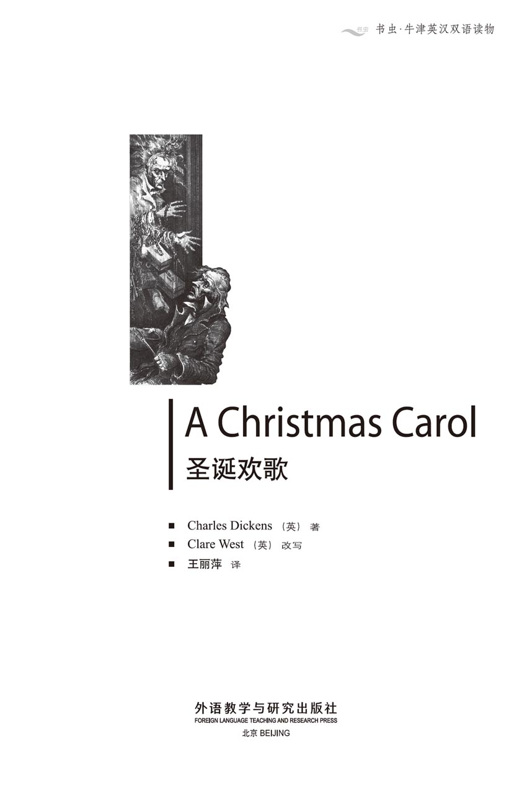
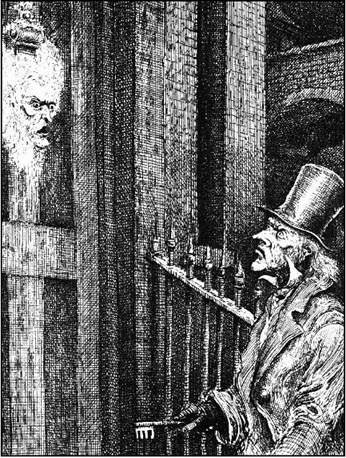
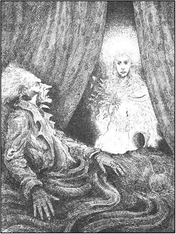
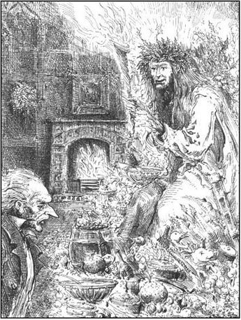
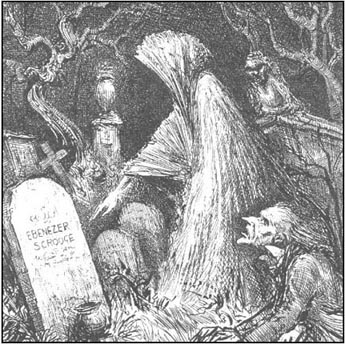
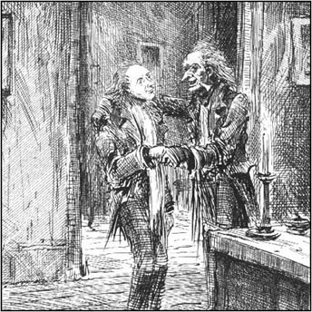
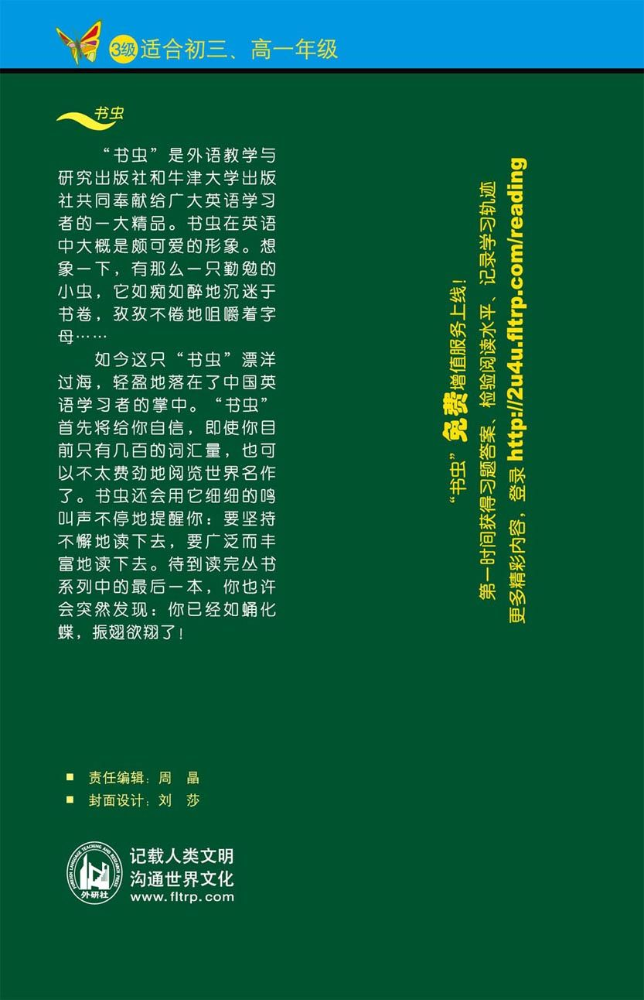

扉页

版权页
京权图字01-97-0344
Originally published by Oxford University Press, Great Clarendon Street, Oxford. © 1996
This edition is licensed for sale in the People's Republic of China only and not for export therefrom.
'Oxford' is a registered trademark of Oxford University Press.
只限中华人民共和国境内销售，不包括香港、澳门特别行政区及台湾省。不得出口。
图书在版编目（CIP）数据
圣诞欢歌＝A Christmas Carol／（英）狄更斯（Dickens, C.）著；（英）韦斯特（West, C.）改写；王丽萍译．—北京：外语教学与研究出版社，1997（2014.12 重印）
（书虫·牛津英汉双语读物）
ISBN 978-7-5600-1357-2
Ⅰ．圣… Ⅱ．①狄…②韦…③王… Ⅲ．小说—英国—对照读物—英、汉 Ⅳ．H319.4：I
中国版本图书馆CIP数据核字（97）第24287号
出版人： 蔡剑峰
责任编辑：周 晶
出版发行：外语教学与研究出版社
社 址：北京市西三环北路19号（100089）
网 址：http://www.fltrp.com
版 次：1998年8月第1版
书 号：ISBN 978-7-5600-1357-2
* * *
凡侵权、盗版书籍线索，请联系我社法律事务部
举报电话：（010）88817519
电子邮箱：banquan@fltrp.com
法律顾问：立方律师事务所 刘旭东律师
中咨律师事务所 殷 斌律师
简介
简 介
埃比尼泽·斯克罗吉是一位脾气暴躁、可怜、吝啬的老头儿。当他的外甥在圣诞前夜去看望他并祝他圣诞快乐时，斯克罗吉一点儿也不高兴。“呸！骗人的东西！”他说。“圣诞节是骗人的东西！所有到处游逛说‘圣诞快乐’的人的舌头都应被割掉。是的，就该这样！”
噢！对了，斯克罗吉是一个刻薄、吝啬的人。他的雇员鲍勃·克拉奇蒂每周只能挣得15先令，而且只能在一间又冷又小的办公室上班，办公室里生的火小得连脚指头都暖和不过来。
但是那年的圣诞前夜，斯克罗吉已故多年的合伙人雅各布·马利的鬼魂拜访了他，其后又有另外三个鬼魂来访……那一夜格外漫长和恐怖，当圣诞节最终来临的时候，斯克罗吉的确已判若两人了。
查尔斯·狄更斯是英国最著名的作家之一，1812年生于朴次茅斯，于1870年去世。他家境贫寒，在不幸的童年之后，他很快变得富有并一举成名。他的著名作品包括《雾都孤儿》、《双城记》和《圣诞欢歌》等。
目录
1 Marley's ghost
1
Marley's ghost
It is important to remember that Jacob Marley was dead. Did Scrooge know that? Of course he did. Scrooge and Marley had been partners in London for many years, and excellent men of business they were, too. When Marley died, Scrooge continued with the business alone. Both names still stood above the office door: Scrooge and Marley. Sometimes people who were new to the business called Scrooge Scrooge, and sometimes Marley, but he answered to both names. He did not care what name they called him. The only thing that mattered to him was the business, and making money.
Oh! He was a hard, clever, mean old man, Scrooge was! There was nothing warm or open about him. He lived a secretive, lonely life, and took no interest in other people at all. The cold inside him made his eyes red, and his thin lips blue, and his voice high and cross. It put white frost on his old head, his eyebrows and his chin. The frost in his heart made the air around him cold, too. In the hottest days of summer his office was as cold as ice, and it was just as cold in winter.
Nobody ever stopped him in the street to say, with a happy smile, 'My dear Scrooge, how are you? When will you come to see me?' No poor man asked him for money, no children asked him the time, no man or woman ever, in all his life, asked him the way. Animals as well as people were afraid of him. Dogs used to hide in doorways when they saw him coming. But what did Scrooge care! It was just what he wanted. He liked being on the edge of people's busy lives, while warning everyone to keep away from him.
One Christmas Eve, old Scrooge was working busily in his office. It was cold, frosty, foggy weather. Outside it was already dark, although it was only three o'clock in the afternoon, and there were candles in all the office windows. The fog covered everything, like a thick grey blanket.
Scrooge kept his office door open, in order to check that his clerk, Bob Cratchit, was working. Bob spent his days in a dark little room, a kind of cupboard, next to his employer's office. Scrooge had a very small fire, but Bob's fire was much smaller. It was very cold in the cupboard, and Bob had to wear his long white scarf to try to keep warm.
'Merry Christmas, uncle! God bless you!' cried a happy voice. Scrooge's nephew had arrived.
'Bah!' said Scrooge crossly. 'Humbug!'
'Christmas is humbug! Surely you don't mean that, uncle?' said his nephew.
'I do,' said Scrooge. 'Why do you call it "merry" Christmas? You're too poor to be merry.'
'Well,' replied the nephew, smiling, 'why are you so cross? You're too rich to be unhappy.'
'Of course I'm cross,' answered the uncle, 'when I live in a world full of stupid people like you! You say "Merry Christmas"! But what is Christmas? Just a time when you spend too much, when you find yourself a year older and not an hour richer, when you have to pay your bills. Everyone who goes around saying "Merry Christmas" should have his tongue cut out. Yes, he should!'
'Uncle! Please don't say that!' said the nephew. 'I've always thought of Christmas as a time to be helpful and kind to other People. It's the only time of the year when men and women open their hearts freely to each other. And so, uncle, although I've never made any money from it, I think Christmas has been and will be a good time for me! And I say, God bless Christmas!'
Bob, in the cupboard, agreed loudly, without thinking. He immediately realized his mistake, and went quickly back to his work, but Scrooge had heard him.
'If I hear another sound from you,' said Scrooge, 'you'll lose you job!'
'Don't be angry with him, uncle,' said the nephew. 'Come and have dinner with us tomorrow.'
'Dinner with you? I'll see you dead first!'
'But why won't you come? Why?'
'Because Christmas is humbug! Good afternoon!'
'I want nothing from you. I ask nothing of you. Why can't we be friends?'
'Good afternoon!' said Scrooge.
'I am sorry, with all my heart, to find you like this. I have never wanted to argue with you. But I came to see you and invite you because it's Christmas, and so I'll say, a merry Christmas, uncle!'
'Good afternoon,' said Scrooge.
'And a happy new year!'
'Good afternoon!' said Scrooge.
His nephew left the room, without an angry word, stopping only to wish Bob Cratchit a merry Christmas.
Then two other gentlemen came in. They were large, round, comfortable-looking men, with books and papers in their hands.
'This is Scrooge and Marley's, I think,' said one of them, looking at the papers that he was carrying. 'Am I speaking to Mr Scrooge or Mr Marley?'
'Mr Marley is dead,' Scrooge replied. 'He died seven years ago today, on Christmas Eve.'
'I'm sure that you are just as kind to the poor as your partner,' said the gentleman, smiling.
What was true was that Scrooge was just as mean as Marley, and Marley had been just as mean as Scrooge.
'At this happy time of year, Mr Scrooge,' the gentleman went on, taking up his pen, 'we should help poor people who have no food or clothes or homes.'
'Are there no prisons?' asked Scrooge coldly.
'Plenty of prisons,' said the gentleman.
'And the workhouses, where poor people can live and work? Are they still open?'
'Yes, they are, I'm sorry to say.'
'I'm happy to hear it,' said Scrooge. 'I thought, from what you said at first, that perhaps these useful places were closed, for some reason.'
'But some of us feel,' replied the gentleman, 'that these places don't offer enough to poor people. We're hoping to give some meat and drink, and wood for a fire, to people who need all these things. This is a time when we should all be able to enjoy ourselves. How much will you give, sir?'
'Nothing!' Scrooge replied. 'I don't have a merry Christmas myself, and I won't pay for other people to be merry. We all have to pay for prisons and workhouses—they cost enough. The poor will have to go there.'
'Many can't go there, and many prefer to die.'
'If they prefer to die, why don't they die, then? There are too many people in the world, so it's a good thing if some of them die. All this is none of my business! It's enough for a man to understand his own business, and not to think about other people's. I'm a very busy man. Good afternoon, gentlemen!'
The gentlemen shook their heads a little sadly, and left the office. Scrooge went back to his work, feeling pleased with himself.
Now the fog was at its thickest outside, and the cold was biting. Lights shone brightly from the shop windows. People were hurrying here and there—rich and poor alike — to buy what they needed for tomorrow's Christmas dinner.
At last it was time to close the office. Scrooge got up slowly from his desk. Bob was waiting for this moment, and he immediately put on his hat.
'You'll want a holiday all day tomorrow, I suppose?' said Scrooge.
'If you don't mind, sir.'
'I do mind. It's not fair. I have to pay you for a day's work when you don't do any work.'
'It's only once a year, sir,' said Bob politely.
'That's no reason for robbing me every twenty-fifth of December!' said Scrooge, putting on his coat. 'But I suppose you must have it. Be here early next morning.'
'Yes, sir, I will, I promise,' Bob said happily. Scrooge walked out, without another word. When Bob had closed the office, he ran home to his family in Camden Town as quickly as possible.
Scrooge always used to eat his dinner alone, in the same miserable little eating-house. Tonight was no different from other nights. He read the newspapers, looked at his bank books, and went home to bed. He lived in rooms which had once belonged to his dead partner. They were in an old, dark building in a lonely side street, where no one except Scrooge lived.
In the blackness of the night, through the fog and the frost, Scrooge had to feel his way along the street with his hands. He finally reached his front door and put the key in the lock. Suddenly, to his great surprise, he saw that the knocker was not a knocker any more, but had become the face of Jacob Marley!
He had not thought of his partner for seven years, until that afternoon, when he spoke Marley's name to his visitors. But there in front of him was Marley's face, white and ghostly, with terrible staring eyes.
As Scrooge looked, it became a knocker again. He was afraid, but he did not show his fear. He turned the key, opened the door and walked in. He did look around before he shut the door, and he did look behind the door, to see if anyone was hiding there. But there was nothing there. He shut the door with a bang, to show that he was not afraid.
With his one candle he went slowly up the stairs. It was impossible to see into all the dark corners. Darkness was cheap, and Scrooge liked it. But he remembered the face, so he walked through all his rooms, checking that everything was all right. Nobody under the table or the bed, nobody behind the door! On the small fire in the bedroom there was a pot of soup, and Scrooge's bowl was ready on the table. Nobody in any of the rooms! Sure that he was safe now, Scrooge shut and locked his bedroom door behind him. He sat down by the fire to eat his soup.
The fireplace was an old one, with hundreds of pictures on the tiles around the fire. But Scrooge could only see Marley's face on every tile.
'Humbug!' said Scrooge to the tiles, and walked across the room. When he sat down again, he noticed a bell on the other side of the room. As he looked, he saw, with great surprise and fear, that the bell was slowly beginning to move from side to side. Soon it was ringing loudly, and so was every bell in the house.
Suddenly they all stopped ringing at the same moment, and then came a strange noise from down below. It sounded like someone pulling heavy chains across the floor. Scrooge remembered hearing that ghosts in old houses sometimes pulled chains behind them. Then a door below opened with a crash, and the noise started coming up the stairs. It was coming towards his door.
'It's humbug still!' cried Scrooge. But the colour left his face when, without stopping, it came straight through the heavy, locked door, and appeared in front of him. It was Marley's ghost!
Scrooge could see right through its body. Around its middle was a long chain, which had money-boxes, keys, bank books, and heavy purses on it. The ghost's death-cold eyes stared fixedly at Scrooge.
'Well!' said Scrooge, trying to pretend that nothing strange was happening. 'What do you want? And who are you?'
'In life I was your partner, Jacob Marley.'
'It's humbug, I tell you!' said Scrooge. 'There are no ghosts!' But when he said this, the ghost gave a terrible cry, and shook its chain in a very frightening way. At once Scrooge fell on the ground in great fear, crying, 'Yes! Yes! You are real! I see that now! Why have you come? Why do ghosts come back from the dead? Tell me, Jacob!'
'The spirit of every man who does not help other people in life has to travel endlessly through the world after his death. We have to carry the chains that we made for ourselves in our lifetime. Do you, Ebenezer Scrooge, recognize my chain? It is very like the one that you wear!'
Scrooge looked around him, but could see no chain. 'Jacob,' he said, 'please tell me more!'
'I cannot help you much, Ebenezer! I cannot rest, I cannot stay anywhere for long. I have been dead for seven years and all that time I have been travelling on the wings of the wind! No peace, no rest for me in death, because I was never good or kind in life!'
'But you were always a good man of business, Jacob,' said Scrooge, who was now beginning to worry about his own life.
'Business!' cried the ghost miserably. 'Why didn't I think of people as my business? I thought only about making money, not about being kind and helpful to other people. Listen to me, Ebenezer! I am here tonight to warn you. You still have a chance to save yourself from what has happened to me. Three spirtis will come to visit you: the first tomorrow at one o'clock, the second at the same time the next night, and the third at midnight the following night. You will not see me any more, and for your own peace after death, remember what I have told you!'
The spirit walked slowly backwards to the window, which began to open. When the ghost reached the window, it held up its hand, and Scrooge listened. He could hear a noise of sad crying in the air. The spirit began to cry, too, and it moved out into the frosty, dark night to join the others. Scrooge ran to the window. Outside, the air was full of spirits, all wearing chains like Marley's ghost, all crying miserably as they realized, too late, the terrible mistakes that they had made in their lives.
Little by little, the spirits and their voices disappeared into the fog and the darkness, and the night was silent again. Scrooge closed the window, and checked his bedroom door. It was still locked. He started to say, 'Humbug!' but stopped suddenly. Perhaps because he was very tired, or because it was late, he went straight to bed, without taking off his clothes, and fell asleep immediately.
partner n. with or in a person who shares (in the same activity). 合伙人。
continue with go on with 继续。
matter v. be important. 重要；有关系。
take no interest in show no interest in. 对……不感兴趣。
frosty adj. stringingly cold; cold with frost. 霜冻的，结霜的，严寒的。
foggy adj. not clear because of fog. 有雾的。
humbug n. nonsense. 胡说。
cross adj. angry; bad-tempered. 发怒的，生气的。
gentleman n. a man who behaves well towards others. 绅士。
mean adj. ungenerous; unwilling to share or help. 刻薄的，吝啬的。
workhouse n. BrE. (in former times) a place for the poor to live when they had no employment, esp. when old. 收容院。
prefer to to choose (one thing or action) rather than another; like better. （两者相比）更喜欢做……。
suppose v. to take as likely; consider as true. 假定、假设，认为。
miserable adj. very poor in quality. 寒酸的。
stare v. to look fixedly with wide-open eyes, as in fear or deep thought. 盯着看。
tile n. a thin shaped piece of baked clay used for covering roofs, walls, floors, etc. 瓦片，瓷砖。
notice v. to pay attention to with the eyes or other senses. 注意到。
pull v. move (something) along behind one while moving. 拖；拉。
chain n. (a length of) usu. metal rings, connected to or fitted into one another. 链子。
take off to remove. 脱下；摘掉。
fall asleep go into a state of sleep. 入睡。
马利的鬼魂
1．马利的鬼魂

要记住雅各布·马利已经死了，这可是件重要的事儿。斯克罗吉知道这个吗？他当然知道。斯克罗吉和马利在伦敦曾是多年的合作伙伴，并且他们还都是精明的生意人。当马利死的时候，斯克罗吉一个人继续操持着生意。办公室门口的上方悬挂的依旧是两个人的名字：斯克罗吉和马利。有时初次来这儿打交道的人们喊斯克罗吉斯克罗吉，有时喊马利，但两个名字他都应答。他不在乎别人叫他什么名字。对他来说唯一重要的事情是他的生意和赚钱。
噢！他是一个刻薄、精明、吝啬的老头儿，斯克罗吉的确是这样的！他没有丝毫热情，也从来不敞开心扉。他过着神秘、孤独的生活，对别人丝毫不感兴趣。他内心的冷漠使他的眼睛呈红色，他的薄唇呈蓝色，他的嗓音既高又暴躁。他的冷漠使他的老脑壳、眉毛和下巴罩上了白色的冰霜。他内心的冰霜使得他周围的空气都变得寒冷。在最炎热的夏日里他的办公室也很冰冷，在冬天也一样寒冷。
走在街上没有人截住他，微笑地向他说，“我亲爱的斯克罗吉，你好吗？你什么时候来我这里坐坐？”穷人没有向他讨过钱，孩子们没有向他问过时间。在他一生中，从没有任何人，无论男女，向他问过路。人和动物都怕他。狗见到他来了就藏到门廊下。但斯克罗吉在乎什么呢！这正是他梦寐以求的。他喜欢处在人们繁忙生活的边缘，他警告所有的人都离他远点儿。
在一个圣诞前夜，老斯克罗吉正在办公室忙碌着。天气寒冷，还有霜冻，雾蒙蒙的。虽然才下午3点，但外面天已经黑了，办公室窗子里都亮起了蜡烛。雾就像一条厚厚的灰毯子笼罩了一切。
斯克罗吉办公室的门总是敞开着，目的是监督他的雇员，鲍勃·克拉奇蒂，有没有怠工。鲍勃整天待在老板隔壁的一间小黑屋里，它实际是一个壁橱。斯克罗吉房间的火很小，鲍勃的火更小。壁橱里冷极了，鲍勃不得不戴着他那条白色的长围巾取暖。
“舅舅，圣诞快乐！上帝保佑你！”一个声音高兴地说。斯克罗吉的外甥已经到了。
“呸！”斯克罗吉恼怒地说，“骗人的东西！”
“圣诞节是骗人的东西！舅舅，当然你不是这个意思？”他外甥说。
“我就是这个意思，”斯克罗吉说，“你为什么说圣诞‘快乐’？你太穷了，根本快乐不起来。”
“哎，”外甥笑着回答说，“你为什么这么生气？你很有钱，不该不高兴啊。”
“我当然生气，”舅舅回答说，“我生活在一个满是像你这种蠢人的世界里！你说‘圣诞快乐’！但圣诞节是什么？不过是一个让你大把大把花钱的日子，这时你会发现你老了一岁可财富却没有增加半点，而且你还得付所有的账单。所有到处游逛说‘圣诞快乐’的人的舌头都应被割掉。是的，就该这样！”
“舅舅，请不要这么说！”外甥说，“我一直把圣诞看作是一个帮助别人、善待别人的日子。一年中只有这么一天男男女女可以彼此自由地敞开心扉。所以舅舅，尽管我从未发过圣诞的财，我认为对我来说圣诞节一直就是而且也将是美好的时刻！愿上帝保佑！”
坐在壁橱里的鲍勃未加思索大声表示赞同。但他立刻意识到自己所犯的错误，便又立即埋头工作，但斯克罗吉已经听见了他的话。
“如果我再听到你发出一点声音的话，”斯克罗吉说，“你就会丢掉这份工作！”
“舅舅，别生他的气，”外甥说，“明天来和我们一起吃晚饭吧。”
“和你们吃晚饭？门儿也没有！”
“那你为什么不来呢？为什么？”
“因为圣诞节是个骗人的把戏！再见！”
“我什么也不要你送给我，我什么都不问你要。我们为什么不能成为朋友呢？”
“再见！”斯克罗吉说。
“看到你这样，我真感到难过，我从来就没想过要与你争吵，但我来是为了看看你并邀请你，因为是圣诞节，所以我要说一声，舅舅，圣诞快乐！”
“再见。”斯克罗吉说。
“新年快乐！”
“再见！”斯克罗吉说。
他外甥离开了房间，没有一句愠怒之言。他停下来祝鲍勃·克拉奇蒂圣诞快乐。
然后进来了另外两位绅士，他们身材魁梧，胖胖的，仪表堂堂，手里拿着书和文件。
“我想，这是斯克罗吉和马利的办公室吧，”其中一位看着手中的文件问到，“你是斯克罗吉先生还是马利先生？”
“马利先生死了，”斯克罗吉回答说，“他是七年前的今天死的，死在圣诞前夜。”
“我肯定对穷人你同你合伙人的态度一样好。”绅士微笑着说。
事实是斯克罗吉同马利一样的吝啬，马利在世时也曾和斯克罗吉一样吝啬。
“在一年中这个幸福的日子里，斯克罗吉先生，”绅士拿起笔继续说，“我们应该帮助那些没有衣食和无家可归的穷人。”
“没有看守所吗？”斯克罗吉冷冷地问。
“有很多看守所。”绅士说。
“还有可供穷人生活和工作的济贫院呢？它们还开着吗？”
“是的，它们开着，很抱歉。”
“我很高兴听到这个，”斯克罗吉说，“听你最开始说的，我还以为这些能够提供帮助的地方由于某种原因都关掉了呢。”
“但是我们有些人感到，”绅士回答说，“这些地方无法为穷人提供足够的东西。我们希望为那些需要帮助的人提供一些肉，饮料和柴火。这个时候我们都应该能够过得开心。你能给多少，先生？”
“什么都不给！”斯克罗吉回答说，“我自己圣诞节都不快乐，所以我也不会花钱去让其他人快乐。我们都要付钱给看守所和济贫院——这笔开销够大的了。没钱的人应该去那儿。”
“很多人不能去，还有很多人宁愿死也不想去那儿。”
“如果他们宁愿死的话，他们为什么不去死呢？世界上的人太多了，所以如果有些人死了的话这倒是件好事。这些都与我无关！一个人能清楚他自己该做什么就够了，用不着去考虑别人的事。我很忙，再见，先生们！”
两位绅士难过地摇摇头，离开了办公室。斯克罗吉又重新开始工作，心中很得意。
现在外面的雾大得不能再大了，天气寒冷刺骨。商店的窗户闪烁出耀眼的光。人们匆忙地穿梭着——有钱人和穷人都一样——去采购他们明天圣诞晚餐所需要的东西。
最后终于到了关门的时间了。斯克罗吉慢慢地从桌子后站起身。鲍勃等的就是这一刻，所以他立即戴上了帽子。
“我猜测你想明天一天都放假，是吗？”斯克罗吉问。
“先生，如果你不介意的话。”
“我确实介意，这不公平。你不做任何工作，我还得付你工钱。”
“先生，一年就这么一次。”鲍勃礼貌地说。
“这也并不能成为每年的12月25日你抢夺我钱财的理由！”斯克罗吉边说边穿上了大衣。“但我想这个节你必须得过。第二天早晨早点到。”
“是的，先生，我会的，我保证。”鲍勃高兴地说。斯克罗吉再没说一句话走了出去。鲍勃关上办公室的门后，以最快的速度朝卡姆登镇的家赶去。
斯克罗吉总是独自一人在同一家寒酸的小饮食店里吃晚饭，今晚也同往常一样。他读了报纸，看了银行的存单，然后回家去睡觉。他住在他合伙人曾住过的房子里，在一幢临街的孤零零的又旧又黑的楼里。只有斯克罗吉一人住在这里。
夜幕下，要穿过雾和霜，斯克罗吉不得不用手摸索着在街上前行。最后终于来到了他的门前，把钥匙插进锁里。突然，他吃惊地看到门环已不再是门环了，它变成了雅各布·马利的脸。
直到今天下午他对来访者说起马利的名字时，他已经有七年没有想过他的合伙人了。但呈现在他面前的就是马利的脸，惨白似鬼一般，还有一双圆睁的恐怖的眼睛。
斯克罗吉看着看着，它又变成了门环，但他没有表现出他的惧怕。他转动钥匙，打开门走了进去。在关上房门以前，他的确环顾了四周，也的确往门后看了看，看看是否有人藏在那里，但门后没有人。他“砰”地一声把门关上以示他并不惧怕。
他举起唯一的一根蜡烛慢慢地上了楼，他无法看见所有黑暗的角落。黑暗便宜得很，所以斯克罗吉喜欢它。但他记起了那张脸，所以他到所有的房间都走了一遍看看是否一切都安然无恙。桌子底下和床底下都没人，门后也没人！卧室微小的炉火上炖着一锅汤，斯克罗吉的碗已经摆在了桌子上。所有房间里都没有人！确信此刻安全无误之后，斯克罗吉随手关上并锁上了卧室的门。他坐在火旁开始喝汤。
这是一个旧壁炉，火周围是数以百计的印有图案的瓷砖，但斯克罗吉在每张瓷砖上所看到的都是马利的脸。
“骗人的东西！”斯克罗吉对着瓷砖说，并在屋里踱着步。当他坐下之后，他发现房间的另一面墙上挂着一个铃铛。他看着看着，惊奇而又恐惧地发现铃铛慢慢地开始左右摆动起来，不一会儿，它响了起来，声音很大，紧接着屋里所有的铃铛都响了起来。
突然它们在同一时间都不响了，紧接着从下面传来了一个奇怪的声音，听上去像是有人拖着沉重的链子从地板上走过。斯克罗吉记起曾听说过有时旧房子里的鬼魂身后拖着链子。然后楼下的一间房门当啷一声开了，声音开始朝楼上走来，朝他的房门走来。
“又是骗人的鬼把戏！”斯克罗吉大声说道，但当那东西径直地穿过厚厚的被锁着的房门出现在他面前时，他面无血色。那是马利的鬼魂！
斯克罗吉能够看穿它的躯体。一条长长的锁链缠在腰间，上面挂着钱盒子、钥匙、存折和沉甸甸的钱包。鬼魂死一般冷漠的眼睛盯着斯克罗吉看。
“哎！”斯克罗吉说，极力装出什么怪事也没发生的样子。“你想要什么？你是谁？”
“活着的时候我是你的合伙人，雅各布·马利。”
“我告诉你，这是骗人的！”斯克罗吉说，“没有鬼魂！”但当他说此话时，鬼魂发出了可怕的叫声，疯狂地摇动着身上的链子。斯克罗吉吓得立刻趴倒在地板上，大声说，“是的！是的！你是真的！我现在明白了！你来干什么？为什么人死后鬼魂要回来？告诉我，雅各布！”
“那些在世时不帮助他人的人，其灵魂死后都要在这个世界上永无休止地游荡。我们不得不戴着我们活着时为自己制造的锁链。埃比尼泽·斯克罗吉，你认出我的锁链了吗？它和你戴的锁链很相似！”
斯克罗吉向他四周看了看，但没看到锁链。“雅各布，”他说，“请你再多告诉我一些！”
“我帮不上你太大的忙，埃比尼泽！我不能停下来，我不能在一个地方久留。我已经死了七年了，在这七年中，我一直借着风的翅膀飘游着！没有安宁，死了也不得休息，因为我活着的时候从来没有行善积德！”
“但你是一个精明的商人，雅各布。”斯克罗吉说，他现在开始担忧起自己的命运来。
“生意！”鬼魂悲惨地说，“我为什么不把人看作是我的生意？我一心想的就是赚钱，但没有想过善待别人或是帮助别人。听我说，埃比尼泽！我今晚来这儿是要警告你，你还有机会拯救你自己避免重蹈我的覆辙。有三个幽灵将来看你：第一个于明天一点钟来，第二个于次日的同一时间来，第三个于大后天的午夜来。你不会再见到我了，为了你自己死后能太平，务必记住我对你说的话！”
幽灵慢慢地退到窗前，窗户开始打开。当鬼魂到了窗前时，它举起一只手，斯克罗吉听着。他听见空中传来凄惨的叫声。幽灵也开始大叫，它来到了雾蒙蒙、黑漆漆的夜色里，加入到其他幽灵的行列。外面的空中到处都是幽灵，它们都戴着和马利鬼魂一样的锁链，它们都在悲惨地叫着，因为它们直到死后才认识到活着的时候所犯下的可怕错误。
渐渐地，幽灵们和它们的吵闹声消失在雾霭和夜色中，夜晚又恢复了平静。斯克罗吉关上窗户，检查了卧室的门。门依然锁着。他开始说，“骗人的东西！”但突然停住了。也许是因为他太累了，或是太晚了，他连衣服也没脱就上床睡觉，而且立刻就睡着了。
2 The first of the three spirits
2
The first of the three spirits
When Scrooge woke up, it was very dark in the room. He heard the church clock start striking, and listened to see what the time was. To his great surprise, the heavy bell went on striking up to twelve, then stopped. Twelve o'clock! It was past two in the morning when he had gone to bed. The clock must be wrong! He looked at his watch. It said twelve o'clock too!
'Have I slept all day? Is it the next night already?' Scrooge asked himself. 'Or has something happened to the sun? Perhaps it's midday, not midnight! But that's impossible!'
He climbed out of bed, and felt his way to the window. But there was nobody outside in the dark, foggy streets, and he realized it must be night-time. He went back to bed again, but could not sleep. He was worried, because he could not understand what was happening. 'Was Marley's ghost a dream?' he wondered. 'But it seemed very real...'
He lay awake until he heard the clock striking a quarter to the hour. Suddenly he remembered. The ghost had warned him that a spirit would visit him at one o'clock. He decided to stay awake until one o'clock had passed. The quarter of an hour passed very slowly, but at last he heard the clock striking the four quarters.
'It's one o'clock!' cried Scrooge delightedly, 'and nothing has happened!' But he spoke before the hour bell had sounded. The clock now struck a deep, sad ONE, and immediately light shone into Scrooge's bedroom. The curtains round his bed were pulled open. Scrooge sat up in bed, and stared at his ghostly visitor.
A strange figure, half like a child, half like an old man, looked back at him. It had long, white hair, but its skin was soft and young. It wore a short, white robe, covered with both summer and winter flowers. But the strangest thing about it was that from the top of its head shone a bright, clear light. Perhaps this light was sometimes too bright, because under one arm it carried a hat, which looked like a large extinguisher.
'Who and what are you, sir?' asked Scrooge.
'I am the ghost of Christmas Past,' replied the spirit, in a soft, gentle voice.
'Do you mean long ago in the past?' asked Scrooge.
'No. Your past.'
'Spirit, please tell me why you are here.'
'I am here for your own good,' answered the ghost.
'Thank you,' replied Scrooge politely. But secretly he thought, 'Bah! A night of unbroken sleep is a more useful thing to have!'
The spirit seemed to hear him thinking, and said at once, 'I am here to help you change your life! Watch and listen!' It put out a strong hand, and held Scrooge by the arm. 'Get up, and come with me!'
It was dark and cold outside. Scrooge did not want to go anywhere, and for a moment he thought about pretending to be too ill to go out. But he did not like to refuse, so he said nothing, and got out of bed. Together they passed through the wall of the house out into the darkness.
Suddenly Scrooge realized they were standing on an open country road, with fields on each side. London, the fog, and the darkness had all disappeared, and it was a clear, cold, winter day, with snow on the ground.
'Good Heavens!' cried Scrooge. 'I was born near here! I remember it well!'
The spirit looked kindly at the old man. 'How strange that you've forgotten it for so many years! What is that on your face? Are you crying?'
Scrooge put a hand over his eyes. 'It's nothing—I've got a cold, that's all. Take me where you want, spirit!'
Scrooge recognized every field, post, and tree, as they walked along the road towards a little market town. All around them were young schoolboys on horses and in farmers' carts, laughing and wishing each other a merry Christmas, as they travelled to their homes for the Christmas holiday.
'They are only shadows from the past,' said the spirit. 'They cannot see us.'
Scrooge knew and named all of them. Why was he so delighted to see them? Why did his cold heart beat faster when they went past, shouting 'Merry Christmas!'? What was 'merry Christmas' to Scrooge? What good had it ever done to him?
'Not everyone has left the school,' said the ghost. 'There is one lonely child there still, one child whose friends have all gone.'
'I know!' said Scrooge. And now he was crying openly.
They turned into a smaller road, and soon came to the school. Inside, in the long, cold, silent classroom, a lonely boy sat reading near a small fire. When he saw his poor forgotten past self, Scrooge sat down at one of the desks, put his head in his hands and cried.
'Poor boy! I wish—but it's too late now.'
'What's the matter?' asked the spirit.
'There was a boy singing Christmas carols at my door yesterday. I'm sorry I didn't give him anything, that's all.'
The ghost smiled, and lifted its hand, saying, 'Let's see another past Christmas!'
The schoolroom became darker and dirtier. There was the young Scrooge again, a little older and bigger than before. He was not reading this time, but was walking up and down, looking very unhappy. The door opened, and a little girl, much younger than him, came running in. Putting her arms round his neck, she said lovingly to him, 'I've come to bring you home, dear brother! Father is so much kinder than he used to be! The other day I asked him if you could come home, and he said yes! And we're going to spend Christmas together, and have the merriest time!' She was laughing delightedly as she began to pull him towards the door. They went out happily together, hand in hand.
'What a warm heart she had!' said the ghost.
'You're right,' said Scrooge. 'I agree with you, spirit!'
'She married, I understand,' continued the ghost, 'and had children, I think, before she died.'
'One child,' answered Scrooge.
'True,' said the ghost. 'Your nephew!'
Scrooge did not answer at once. 'Yes,' he said at last.
Now the school had disappeared, and they were in the middle of a busy town, with shadowy crowds and carts all around them. Here it was Christmas time again, but it was evening, and there were lights in the shops and streets.
The ghost stopped at an office door. 'Do you know this place, Scrooge?' he asked.
'Know it!' cried Scrooge. 'Why, I was a clerk here!'
They went in, and when they saw a large, kind-looking old gentleman sitting at a high desk, Scrooge cried excitedly, 'Good Heavens, it's old Fezziwig! God bless him! It's Fezziwig alive again!'
Old Fezziwig put down his pen, and looked at the clock. Fastening his coat buttons over his fat stomach, he started laughing as he called out in a rich, deep, happy voice, 'Ebenezer! Dick! Seven o'clock! No more work tonight! It's Christmas Eve, remember!'
The young Scrooge hurried in, with another clerk.
'That's Dick Wilkins!' said Scrooge quietly to the ghost. 'He always liked me. Oh dear! poor Dick!'
Together the two young clerks put away all the pens and papers, and, following Fezziwig's orders, cleared all the furniture away from the centre of the room. In came a fiddler. In came Mrs Fezziwig, fat and smiling. In came the three Fezziwig daughters, sweet and pretty. In came the six young men who were in love with them. In came the cook, with her young man, the milkman. In came the boy from next door, with the girl from the house opposite. In they came, some quietly, some noisily, but all happy because it was Christmas Eve. The fiddler started playing, and away they all went in the dance, twenty pairs at the same time, round and round, down the middle and up again. When they were all tired, old Fezziwig cried out, 'Well done! Now, have something to eat and drink!' There was cake and hot meat and bread and cold meat and fruit, and all kinds of drinks, on a long table near the door. And after they had eaten, they danced again.
When the clock struck eleven, the dancing ended. Mr and Mrs Fezziwig stood by the door, shaking hands with each person as he or she went out, and wishing him or her a merry Christmas.
During this time Scrooge had thought of nothing except what was happening in front of his eyes. He remembered and enjoyed it all with the greatest delight. But when the dancing came to an end, he realized that the ghost was looking at him. The light on the spirit's head was burning very clearly.
'It seems easy enough to amuse these childish people,' said the ghost. 'It was nothing much that Fezziwig did, was it? After all, he only spent a few pounds, on food and drink and paying the fiddler.'
'It isn't a question of money,' replied Scrooge warmly. He was speaking like the young man he used to be, not the old man he was now. 'No, spirit, you see, our employer can make us happy or sad. His words, his looks, all these things are so important! The happiness that he gives is just as valuable as money!'
He suddenly stopped speaking, when he felt the spirit watching him closely.
'What's the matter?' asked the ghost.
'Er—nothing,' said Scrooge. 'Just that — I'd like to be able to say a word or two to my clerk now.'
Now Scrooge could see himself again. He was older now, and it was clear that he was beginning to show an unhealthy interest in money. His eyes were restless, and his mouth looked thin and mean. He was not alone, but was sitting beside a lovely young girl. The light that shone brightly from the ghost of Christmas Past showed that she was crying.
'I know it doesn't matter very much to you,' she said softly. 'You care about gold more than you care about me. Perhaps I shouldn't be sad. Money will give you the happiness that I wanted to give you.'
'But I haven't changed towards you, have I?'
'You have changed. We promised to marry a long time ago, when we were both poor, and happy to be poor. I have stayed the same, but you have different hopes and dreams now. I loved the man that you used to be, but I know that you do not wish to marry me any more. So I've come to tell you that you're free. Be happy in the life that you've chosen!' And she left him.
'Spirit!' cried Scrooge. 'Show me no more! Take me home! This is too painful!'
'One shadow more!' said the ghost.
'No more!' cried Scrooge. 'I don't wish to see any more!' But the spirit held his arms, and he could not escape.
Now they were in another place, in a room which was not very large, but comfortable. Near the fire sat a beautiful young girl. Scrooge thought she was the girl that he had just seen, until he saw her, now a good-looking married lady, sitting opposite her daughter. The room was full of children, and noise, and shouting, and laughing. Just then the door opened, and the father entered, carrying a great pile of Christmas presents. The noise became twice as loud, as the children received their presents with delight, and kissed their father gratefully. Finally, the younger ones went upstairs to bed, and Scrooge watched more sadly than ever, as the father sat down with his loving daughter and her mother by the fire.
'Belle,' said the husband, turning to his wife with a smile, 'I saw an old friend of yours this afternoon. Guess who? Mr Scrooge! He was sitting alone in his office. His partner is dying, and I don't think he has any other friends.'
'Spirit!' said Scrooge in a broken voice. 'Take me away from this place.'
'These are shadows of the things that happened in the past,' said the ghost. 'You chose the life that you preferred, so why cry now?'
'I can't watch any more! It's too awful! Leave me alone, spirit!' And Scrooge, noticing that the ghostly light was burning high and bright, suddenly took the extinguisher, and pushed it down hard on the spirit's head. But although it covered the ghost's head and body, Scrooge could not hide the light, which continued to shine out strongly from underneath.
Now Scrooge found himself back in his own bedroom again. Feeling very tired, he climbed into bed and at once fell into a deep, heavy sleep.
wake up to cease to sleep. 醒来。
be covered with to be spread over 被……覆盖着。
extinguisher n. any of several types of instrument for putting out small fires by shooting liquid chemicals at them. 灭火器；熄灭蜡烛的用具。
delighted adj. very pleased and happy. 高兴的。
lonely adj. without company. 孤独的。
carol n. a special song which people sing at Christmas. 颂歌。
lift v. to raise. 举起。
shadowy adj. hard to see or know about clearly; not distinct. 幽暗的，朦胧的。
fasten v. to tie. 系；拴。
fiddler n. somebody who plays the fiddle. 小提琴手。
opposite adj. facing. 对面的。
come to an end to stop; to finish. 结束。
amuse v. to please; make happy. 使娱乐；使高兴。
painful adj. causing pain. 痛苦的。
escape v. to reach freedom. 逃跑。
grateful adj. feeling or showing thanks to another person. 感激的。
awful adj. (infml.) very bad. 糟糕的，极坏的。
三幽灵中的第一位
2．三幽灵中的第一位
当斯克罗吉醒来的时候，房间里黑极了。他听见教堂的钟声响了，他听着想知道是几点了。令他大吃一惊的是，沉重的钟声一直敲了12下，然后停了。12点了！他上床睡觉的时候已经是凌晨2点了。一定是钟出了问题！他看了看他的手表，也是12点。
“我睡了一整天吗？难道已经是第二天夜里了吗？”斯克罗吉问自己。“或者是太阳出了问题？也许现在是正午而不是午夜！但那不可能。”
他下了床，摸黑来到窗前，但外面漆黑的、雾蒙蒙的街上一个人也没有，他知道一定是晚上。他又上了床，但是却睡不着。他忧心忡忡，因为他不明白正在发生的一切。“马利的鬼魂是梦吗？”他想知道。“但它似乎是真的。”
他睁着眼睛躺着，直到听见钟敲45分。突然他记起了。鬼魂曾警告过他，1点钟时有个幽灵要来见他。他决定睁眼等到1点钟过去。15分钟过得极慢，但最后他终于听到钟敲了4刻。
“1点了！”斯克罗吉高兴地大叫道，“而且什么也没发生！”但他是在整点的钟响之前说这番话的。现在钟敲了沉闷悲伤的1点，立刻就有亮光照进了斯克罗吉的卧室。他床周围的帘子被扯开了。斯克罗吉从床上坐起，注视着鬼魂般的来访者。

一个奇怪的影子，一半像孩子，一半像老头儿，回头看着他。它的头发又长又白，但它的皮肤柔软而富有弹性。它穿着白色的短袍子，上面满是夏季和冬季的花儿。但最奇怪的是它的头顶上闪耀出明亮的光。也许这光有时太亮了，因为它的一只胳膊下夹着一顶帽子，看上去像是一个很大的灭火工具。
“你是谁，是干什么的，先生？”斯克罗吉问。
“我是昔日圣诞鬼魂。”幽灵用柔弱、温柔的声音回答说。
“你是指过去很久以前吗？”斯克罗吉问。
“不。是你的过去。”
“幽灵，请告诉我你为什么来这儿。”
“我来这儿纯粹是为了你好。”鬼魂说。
“谢谢你，”斯克罗吉礼貌地回答说，但他心里想，“呸！睡个一晚上没人打扰的觉比什么都强。”
幽灵似乎懂得了他在想什么，便立刻说，“我来这儿是帮助你改变你的生活的！看好了，听清楚！”它伸出一只强有力的手，抓住斯克罗吉的胳膊。“起来跟我走！”
外面又黑又冷。斯克罗吉哪儿也不想去，所以一时间他想装成病入膏肓的样子无法出去，但他又不愿拒绝，所以他什么也没说就下了床。他们一起穿过房子的墙壁来到了夜色中。
忽然斯克罗吉发觉他们来到了一条空旷的乡间大路上，两边都是田野。伦敦、浓雾和黑暗都已消失，现在是一个晴朗、寒冷的冬日，地上覆盖着积雪。
“天哪！”斯克罗吉喊道，“我出生在这儿附近，我记得很清楚！”
幽灵友善地看着这位老人。“奇怪得很，这么多年你都把这忘记了！你脸上是什么？你哭了吗？”
斯克罗吉用一只手捂住他的眼。“没事儿——只是我得了感冒。幽灵，带我去你想去的地方吧！”
在他们去往一个小集镇的路上，斯克罗吉认出了每一片田野，每一处驿站和每一棵树木。他们周围到处都是学校的男孩子们，他们有的骑在马上，有的坐在农夫的马车里，在他们赶回家过圣诞节的路上，他们笑着彼此祝愿圣诞快乐。
“他们只不过是过去的影子，”幽灵说，“他们看不见我们。”
斯克罗吉全都认识他们，并能叫出他们的名字。为什么他看见他们这么高兴？为什么当他们走过，高喊着“圣诞快乐”时，他冷酷的心跳得快了？“圣诞快乐”对斯克罗吉意味着什么？它给他带来过什么好处？
“不是所有的孩子们都离开了学校，”鬼魂说。“那儿还有一个孤独的孩子，他的朋友们全都走了。”
“我知道！”斯克罗吉说。现在他毫不掩饰地哭了。
他们拐到了一条更窄的路上，不一会儿就来到了学校。在那间狭长、寒冷、寂静的教室里，一个孤独的孩子正坐在微弱的火旁看书。当他看见那寒酸的、已被忘却的过去的自己时，斯克罗吉坐在一张课桌旁，双手抱头哭了。
“可怜的孩子啊！我希望——但现在太晚了。”
“什么事？”幽灵问。
“昨天有一个男孩子在我的门口唱圣诞颂歌，我很后悔什么也没给他，就是这事儿。”
鬼魂笑了，举起一只手说，“咱们再去看看另外一个昔日圣诞节。”
教室变得更暗更脏了，又出现了年轻的斯克罗吉，比以前稍微长大了一些而且个头高了一些。这次他没在看书，而是来回踱着步，看上去很不高兴。门开了，跑进来一个比他小得多的女孩儿。她双手搂着他的脖子亲昵地对他说，“我是来带你回家的，亲爱的哥哥！父亲比从前慈爱多了。不久前的一天，我问他你可不可以回家，他答应了！我们可以一起过圣诞节了，而且会过得比以前都快活！”她开心地笑着拉起他朝门口走去。他们手拉着手，一起高兴地出去了。
“她真是热心肠！”鬼魂说。
“你说得对，”斯克罗吉说，“我同意。”
“她结婚了，我知道，”鬼魂继续说，“而且我想，在她死之前有了孩子。”
“有一个孩子，”斯克罗吉回答说。
“对，”鬼魂说。“你的外甥！”
斯克罗吉没有马上回答。“是的。”他最后说。
现在学校不见了，他们来到了一座繁忙的镇子中心，周围都是模糊的人群和马车。这里也是圣诞节的日子，但已是夜晚，商店和大街上都亮起了灯。
鬼魂在一个办公室的门前停下。“你认识这个地方吗，斯克罗吉？”它问。
“认识！”斯克罗吉大声说，“啊，我曾是这儿的一名雇员啊！”
他们走了进去，当他们看见一位身材魁梧、慈眉善目的老绅士坐在一张高高的桌子旁时，斯克罗吉兴奋地喊道，“天哪，他是老费泽威格！上帝保佑他！费泽威格又活了！”
老费泽威格放下笔，看了看表。系好胖肚子上的外衣扣子，他一边用圆润、低沉、幸福的声音大声说，“埃比尼泽！迪克！7点了！今晚就干到这儿了。记得吗，今天是圣诞前夜！”一边开始笑了起来。
年轻的斯克罗吉带着另一个雇员匆匆地进来了。
“这是迪克·威尔金斯！”斯克罗吉悄悄地告诉鬼魂，“他一直都挺喜欢我。噢，亲爱的。可怜的迪克！”
两个年轻的雇员一起把所有的笔和文件都收拾好放到了一边，并按照费泽威格的吩咐把所有的家具都从屋子中央挪开。一个小提琴手走了进来；费泽威格太太走了进来，胖胖的，面带笑容；费泽威格的三个女儿走了进来，她们长得甜甜的而且很漂亮；六个爱着这三位姑娘的年轻人走了进来；厨师和她年轻的丈夫，送奶工走了进来；隔壁家的男孩，带着对面房子里的女孩走了进来。他们都进来了，有的静悄悄的，有的吵吵嚷嚷的，但都兴高采烈，因为今天是圣诞节。小提琴手开始演奏，他们全都加入到跳舞者的行列，同时有20对儿，来回地转着圈跳着。当他们都跳累了的时候，老费泽威格大声说，“跳得好极了！现在吃点东西或喝点什么吧！”在门口的一张长桌子上摆着蛋糕、烧好的热乎乎的肉、面包、冷肉、水果和各种喝的。他们吃过之后又重新跳舞。
当钟敲11点的时候，舞会结束了。费泽威格先生和太太站在门口，他们和每个离开的人一一握手并祝愿他或她圣诞快乐。
在这斯间斯克罗吉想的只是他眼前所发生的一切。他记起了过去发生的一切并且觉得一切都很开心。但当舞会结束的时候，他觉察到鬼魂正看着他。幽灵头上的光明亮地闪烁着。
“好像轻而易举就能给这些天真的人们带来娱乐，”鬼魂说，“费泽威格并没做多少事情，不是吗？他充其量不过是花了几个英镑买了些吃的、喝的和付了小提琴手的报酬。”
“这不是钱的问题，”斯克罗吉热情地回答说。他说话的样子和他年轻时一样，可不是现在年迈的那副神情。“不，幽灵，要知道，我们的雇主能够令我们高兴或悲伤。他的话语、他的表情，所有这些都很重要！他给我们带来的幸福同金钱一样有价值！”
当他感到幽灵正密切地注视着他的时候，他不再说下去了。
“怎么了？”鬼魂问。
“哦——没什么，”斯克罗吉说，“只是——我想现在和我的雇员说一两句话。”
斯克罗吉现在又能看见他本人了。他现在比以前又长了几岁了，很显然他对钱已经显示出一种不良的兴趣。他目光焦虑，嘴看上去刻薄且吝啬。他不是独自一人，他身边坐着一个可爱的姑娘。借着“昔日圣诞”鬼魂身上发出的明亮的光可以看出她在哭。
“我知道这对你来说算不了什么，”她轻柔地说，“你把金子看得比我还重。也许我不该难过，金钱会给你带来我想带给你的幸福的。”
“但对你我并没变心，不是吗？”
“你已经变了。在很久以前当我们都还很穷但又穷得快乐的时候，我们就许诺过要结婚。我一直没改变想法，但你现在有了不同的希望和理想。我爱的是过去的你，但我知道你不再想娶我了，所以我来是想告诉你，你自由了。祝你在你自己选择的道路上幸福生活！”她离开了他。
“幽灵！”斯克罗吉大声说，“别再让我看下去了！带我回家吧！这太痛苦了！”
“还有一个！”鬼魂说。
“一个也不要再看了！”斯克罗吉高声喊道，“我不想再看了！”但幽灵抓住他的胳膊，所以他无法逃脱。
现在他们来到了另一个地方，一个不是很大但非常舒适的房间里。火边坐着一位漂亮的年轻姑娘。斯克罗吉以为这位就是刚才看到过的女孩，直到他看见了她，现在已是一位漂亮的已婚妇人了，就坐在女儿的对面。房间里都是孩子，满屋子吵闹声、喊叫声和笑声。这时门开了，父亲抱着一大摞圣诞礼物走了进来。当孩子们高兴地拿到礼物时，吵闹声比刚才高了一倍，他们充满感激地吻了父亲。最后，小点儿的孩子们上楼睡觉去了。父亲同他可爱的女儿及妻子在火炉旁坐下，这时，斯克罗吉比往常更加伤心地看着。
“贝尔，”丈夫说着把脸转向妻子，面带微笑。“我今天下午看见了你的一位老朋友，你猜他是谁？斯克罗吉先生！他正独自一人坐在他的办公室里。他的合伙人快要死了，我认为他再没有别的朋友了。”
“幽灵！”斯克罗吉用颤抖的声音说。“带我离开这个地方吧。”
“这都是过去所发生的事情的影子，”鬼魂说，“你选择了你喜欢的生活，现在干嘛要哭呢？”
“我不能再看下去了！太可怕了！幽灵，让我一个人待着吧！”当斯克罗吉看到鬼火高高地明晃晃地照着时，他突然夺下灭火器，重重地放在了幽灵的头上。但尽管它盖住了鬼魂的头和身体，斯克罗吉还是盖不住它身上的光，那光依旧从下面强烈地放射出来。
现在斯克罗吉发现他又回到了自己的卧室。感觉非常疲劳，他爬上床立刻就进入了沉沉的梦乡。
3 The second of the three spirits
3
The second of the three spirits
When Scrooge woke up, he realized immediately that the church clock was just going to strike one. He felt sure that the second spirit would soon visit him. This time he wanted to be ready, so he pulled back all the curtains round his bed himself, and lay there, waiting. At one o'clock, instead of a spirit, a strong light shone down on Scrooge's bed. He felt very frightened. After a few minutes he thought that perhaps the light was coming from the next room, so he got up and went to the door. When he touched it, a strange voice called his name, and asked him to enter. He obeyed.
Although he recognized it as his own room, it looked very different now. The walls were covered with bright green leaves, and there was a good fire burning in the fireplace. On the floor were big piles of the best Christmas food—wonderful rich dark cakes, warm soft bread, colourful apples and oranges, plates of yellow butter, cooked chickens, boxes of chocolates and sugared sweets. Sitting beside all this was a large, smiling spirit, who called out cheerfully to Scrooge, 'Come in! Come in, man! I am the ghost of Christmas Present! Look at me!'
Since the first ghost's visit, Scrooge was no longer very sure of himself. So although the spirit's eyes were clear and kind, Scrooge was afraid to look straight into its face. But he could see that its body was dressed in a long green robe, its long brown hair fell freely down its back, and its face wore a warm and friendly smile. Light shone from the torch which it was holding in its strong right hand.
'Spirit,' said Scrooge quietly, 'take me where you want. Last night I learned a lesson which is working now. If you have anything to teach me tonight, let me learn from you.'
'Touch my robe!' said the spirit, and Scrooge obeyed.
The food, the room, the fire all disappeared, and they were standing outside in the cold, snowy streets on Christmas morning. Althought the sky was grey and the streets were dirty, the people looked surprisingly cheerful, as they hurried to the bakers' shops with their Christmas dinners, all ready for cooking. The spirit seemed specially interested in poor people. He stood with Scrooge in a baker's doorway and held his torch over the dinners as they were carried past him. Sometimes, when he saw people pushing each other or getting angry, he lifted his torch over their heads, and immediately they became kinder, or stopped arguing, 'because it's Christmas,' they told each other.
'What does your torch do, spirit?' asked Scrooge.
'It gives a special taste to people's dinners on this day,' answered the spirit.
'Why do you use it most on poor people?' said Scrooge.
'Because poor people need it most,' was the reply.
They went on through London, and came to the small house where Scrooge's clerk lived. Here the spirit smiled, and held his torch high over the door. Inside, Bob Cratchit's wife and second daughter, Belinda, in their everyday dresses, but looking clean and pretty, were putting plates on the table for their Christmas dinner. Bob's son Peter was helping to cook the potatoes, and two smaller Cratchits, a boy and a girl, were running round excitedly. Just then the eldest daughter, Martha, arrived home from work.
'Here's Martha, mother!' cried the two young Cratchits happily. 'We're having a really big chicken for dinner, Martha!' In fact it was only a small chicken, but it seemed large to the excited children.
'My dear, how late you are!' said Mrs Cratchit, kissing her daughter several times.
'We were so busy yesterday, mother!' replied the girl. 'That's why we didn't finish until this morning!'
'Well! Never mind, now that you're here. God bless you! Sit down by the fire, my dear!'
'No, no! Father's coming!' cried the two young Cratchits. 'Hide, Martha, hide!'
So Martha hid herself, and in came Bob in his thin coat and long white scarf, with his son Tiny Tim in his arms. Poor Tiny Tim! He had not walked since he was born, and although he could pull himself and his thin little legs along with the help of a wooden crutch, he was not strong enough to travel far alone.
'Why, where's Martha?' cried Bob, looking round.
'Not coming,' said Mrs Cratchit.
'Not coming!' repeated Bob, his cheerful smile disappearing. 'Not coming on Christmas Day!'
But Martha didn't like to worry her father for a minute, so she ran out from behind the door and kissed him, while the two young Cratchits showed Tiny Tim the chicken, now ready to eat.
Scrooge and the spirit watched as the family sat down to eat. It was a poor enough meal, but to them it seemed wonderful, and they ate every bit of it.
'It's the best chicken I've ever tasted,' said Bob, smiling round at his family, who, with their mouths full, all agreed.
And then, the most exciting moment of the day! Belinda put a clean plate in front of each person, and they all turned to look at Mrs Cratchit as she came in from the kitchen. Her face was hot from her morning's work, but she was smiling happily as she carried in — the Christmas pudding, in its little circle of blue fire!
Oh, it was a wonderful pudding! They were all delighted with it.
'It's your greatest success in all the years that we've been married, my dear!' said Bob.
'Well, I did wonder how much fruit to put in it,' said his wife, 'but, yes, it's a good one!' And she laughed just like a young girl.
Nobody said that it was a very small pudding for a large family. Nobody even thought it. No Cratchit ever said or thought things like that.
At last, when they had finished their meal, the children cleared the table and washed the plates. Then they all sat round the fire, eating apples and oranges. There was a large bowl of fruit and sugar and hot water and something a little stronger, but only three people could drink at the same time, because the family only owned two glasses and a cup. But this did not worry the Cratchits at all. Now Bob lifted his glass and said, 'A merry Christmas to us all, my dears! God bless us!'
The family repeated his wish, and Tiny Tim said, last of all, 'God bless us every one!' He sat very close to his father, on a small chair. Bob held his son's thin little hand in this own. The boy had a special place in his father's heart.
'Spirit,' said Scrooge, with an interest that he had never felt before, 'tell me if Tiny Tim will live.'
'In the future I see an empty chair by the fire, with a crutch beside it. If these shadows do not change, the child will die.'
'No, no!' said Scrooge. 'Oh no, kind spirit! Say that he will live!'
'If his life does not change soon, he will die before next Christmas. What does that matter? There are too many people in the world, so it's a good thing if some of them die.'
Scrooge was ashamed and sad to hear his own words spoken by the spirit. But he lifted his head when he heard his name.
'Mr Scrooge!' said Bob. 'Let's drink to Mr Scrooge, whose money has paid for this meal!'
'His money!' said Mrs Cratchit angrily. 'What can we buy with his fifteen shillings a week? Why should we drink to the health of a hateful, hard, unfeeling, mean old man like Scrooge?'
'My dear,' said Bob gently, 'remember it's Christmas.'
'Well, Bob, I'll drink to his health only because of you and because it's Christmas. Long life to Mr Scrooge! A merry Christmas and a happy new year to him! He'll be very merry and very happy, I'm sure!'
When the children heard Scrooge's name, a dark shadow came over their happiness for a while, and they were quiet and a little sad. But five minutes later they were talking, and laughing, and telling stories, ten times merrier than before. They were not a good-looking or a well-dressed family, but they were happy and grateful and loved each other. As they disappeared in the light of the spirit's torch, Scrooge could not take his eyes off them, especially Tiny Tim.
By this time it was getting dark, and snowing heavily. The spirit took Scrooge into many houses, where fires were burning cheerfully, and food was cooking, and people were merrily welcoming their friends and families into their homes. The ghost was delighted to see all this excitement, and made sure that he lifted his torch over every poor family, to give them more fun, and better food, and greater happiness.
Then the spirit took Scrooge away from the busy capital, to a wild, lonely place in the country, where no trees grew. Here they visited a small stone house, a long way from any town or village, where an old man and woman were singing Christmas carols, with their children and grandchildren. The spirit did not stay long here, but told Scrooge to hold his robe again.
'Where are we going? Not up in the air, surely!' And Scrooge, terribly frightened, looked down as they flew over the land and then over the sea. It was stormy, windy weather, and the waves crashed violently underneath them. The spirit took Scrooge to a lighthouse built on a lonely rock, several miles from land. A light was kept burning at the top, in order to warn sailors to keep away from the dangerous rocks. Two men lived here in this cold, unfriendly place, far away from their families, but the spirit smiled to see them shake hands, wish each other a merry Christmas, and sing a carol together in front of their fire.
Again the spirit and Scrooge flew on, and together they landed on a ship in the middle of the sea. Here every man, although many miles from home, had a kind word for his friend, or thought warmly of his family, because it was Christmas.
It was a great surprise to Scrooge, while listening to the noise of the wind and waves, to hear a happy laugh. He recognized it as his nephew's, and found himself, with the smiling spirit beside him, in his nephew's bright, warm sitting-room.
When Scrooge's nephew laughed, everybody who was with him wanted to laugh too. He had that kind of laugh. And at the moment, his very pretty wife and several of his friends were laughing with him.
'He said that Christmas was humbug! Ha ha ha!' cried Scrooge's nephew.
'That's very bad of him, Fred!' said his wife.
'He's a strange old man,' said Scrooge's nephew, 'but I'm sorry for him. His money is no use to him, you see. He isn't at all happy or comfortable, although he's rich. It's sad to think of him sitting alone in his cold room. And so I'm going to invite him every Christmas. He can be cross and miserable if he likes, but I'll go on inviting him and one day perhaps he'll think better of Christmas!'
After tea, the cheerful little group sang songs, and played music. Scrooge recognized the song that his little sister used to sing, and remembered sadly what the ghost of Christmas Past had shown him. Later the friends played guessing games, and Scrooge joined in the games with delight. Nobody except the spirit could hear him, but he often guessed the right answer.
'It's time to go now,' said the ghost, smiling at the old man's childish excitement.
'No, spirit, please, let me stay a little longer. Look, they're playing a new game!'
It was a game called Yes and No, in which Scrooge's nephew had to think of something, and the others had to ask questions to discover what it was. The only possible answers were Yes or No. Scrooge heard that Fred was thinking of a living animal, a wild animal, sometimes an angry animal, which lived in London and walked in the streets. Every time he answered a question, Fred could not stop himself laughing. At last, his wife's dark, pretty sister started laughing too.
'I know what it is, Fred! I know!' she cried out. 'It's your uncle Scro-o-o-o-oge!'
Everyone laughed until they cried. What a wonderful game! What a clever idea of Fred's! But at last Fred dried his eyes, and said, 'We've been very merry because of him, so I think we should drink to his health. Here's to Uncle Scrooge! A merry Christmas and a happy new year to the old man! Uncle Scrooge!'
'To Uncle Scrooge!' they all cried, cheerfully lifting their glasses.
Uncle Scrooge wanted to thank them, but the spirit hurried him away. The ghost seemed much older now: his brown hair had become grey.
'Are spirits' lives so short?' asked Scrooge.
'My life in this world ends at midnight tonight. Listen! It's a quarter ro midnight now!'
The church clock was striking the three quarters.
'Excuse me for asking, spirit,' said Scrooge, 'but what are those strange things near your foot?'
'Oh man, look here!' said the spirit sadly, and brought out from under his robe two ghostly figures, a boy and a girl. They were thin and poorly dressed, with cold, mean eyes and dry, yellow skin, and their faces showed only a frightening and murderous hate. Scrooge had never seen anything so terrible or so sad.
'These miserable children are Man's,' said the spirit. 'The boy is Crime. The girl is Need. They will destroy Man if nothing is done about them.'
'Can't anyone help them?' cried Scrooge.
'Are there no prisons?' said the spirit, turning on Scrooge for the last time with his own words. 'Are there no workhouses?'
The clock struck twelve. Scrooge looked, but could no longer see the ghost or the children. He was alone again.
frighten v. to fear. 吓唬。
obey v. to do (what one is asked to do) by. 服从。
fireplace n. the opening for a fire in the wall of a room, with a chimney above it and often an ornamental area around it. 壁炉。
cheerful adj. happy. 兴高采烈的。
kiss v. to touch with the lips as a sign of love or as a greeting. 吻。
God bless you! people used to say this when they liked someone or were grateful to them. 愿上帝保佑你！
pull v. to draw. 拉；拖。
pudding n. the sweet dish in a meal, served after meat or fish and before cheese. 布丁。
crutch n. a stick with a piece that fits under the arm, for supporting a person who has difficulty in walking. 拐杖。
repeat v. to say again. 重复。
ashamed adj. feeling shame. 可耻的。
shilling n. a coin in old British money (equal to five pence today). 先令。
stormy adj. having one or more storms. 有暴风雨的，多风暴的。
lighthouse n. a tower or other building with a powerful flashing light that guides ships or warns them of dangerous rocks. 灯塔。
unfriendly adj. not acting or ready to act as a friend. 不友好的。
comfortable adj. giving comfort, esp. to the body. 舒适的。
nephew n. the son of one's brother or sister. 侄子，外甥。
merry adj. cheerful, esp laughing. 欢快的。
strike v. to hit. 敲；打。
murderous adj. likely to cause death. 杀人的，行凶的。
三幽灵中的第二位
3．三幽灵中的第二位
当斯克罗吉醒来的时候，他立刻发现教堂的钟就要敲响1点钟了。他肯定第二个幽灵不久就要来了。这次他想做好准备，所以他自己把他床周围的帘子都拉开了，躺在那儿等着。1点钟时，幽灵没有来，但一束强光从上面照在了斯克罗吉的床上。他害怕极了。几分钟之后，他以为光是从隔壁的房间照过来的，所以他起身下床来到了门口。当他的手摸到门时，一个奇怪的声音叫他的名字并让他进去，他听从了。

尽管他认出这是他自己的房间，但它现在看上去已完全不同。墙壁被鲜亮的绿叶所覆盖，壁炉里燃烧着熊熊的火焰。地板上摆着大堆的上好的圣诞食品——味道浓郁的巧克力蛋糕、热乎乎松软的面包、鲜艳的苹果和桔子、一盘盘的黄油、炖好的鸡、一盒盒的巧克力和糖果。坐在这些东西旁边的是一个身材高大、面带笑容的幽灵，它高兴地对斯克罗吉高声喊，“请进！请进，伙计！我是今日圣诞鬼魂！看着我！”
自从第一个鬼魂的来访，斯克罗吉对自己就没了把握。所以尽管幽灵的眼睛明亮且充满善意，但斯克罗吉还是不敢正视它的脸，但他能看见幽灵身穿一件绿色长袍，它长长的棕色头发随意地散落在背上，它面带热情友好的笑容。光是从他强有力的右手握着的火把里发出的。
“幽灵，”斯克罗吉轻柔地说，“你想带我去哪儿就去哪儿。昨天晚上我接受了教训，而且这教训现在正在生效。如果今晚你也有什么要告诉我的话，请让我向你领教。”
“拽着我的长袍！”幽灵说，斯克罗吉从命了。
食品、房间、炉火都消失了。是圣诞早晨，他们正站在冰天雪地的大街上。虽然天空灰蒙蒙的，街上也很脏，但当人们拿着他们的圣诞晚餐匆匆赶往面包房准备烤制的时候，他们看上去都出奇的欢喜。幽灵似乎对穷人特别感兴趣。它和斯克罗吉一同站在面包房的门口，当晚餐从它面前经过时它把火把照在上面。有时当他看见人们相互拥挤或发脾气时，他把火把举在他们的头上，他们立刻就会变得和气或停止争吵，“因为今天是圣诞节，”他们彼此告诫着。
“你的火把是做什么用的，幽灵？”斯克罗吉问。
“它能给人们今天的晚餐带来特殊的味道。”幽灵回答说。
“你为什么大多把它用在穷人身上？”斯克罗吉问。
“因为穷人最需要它。”幽灵回答说。
他们继续前行，穿过伦敦，来到了斯克罗吉的雇员的狭小住处。在这儿幽灵笑了，把他的火把高高地举过房门。屋里，鲍勃·克拉奇蒂的妻子和二女儿贝琳达身穿她们平日的服装，但看起来干净漂亮，她们正往桌子上摆圣诞晚餐用的盘子。鲍勃的儿子彼得正帮着烧土豆，两个再小点的孩子，一男一女，正高兴地来回跑着。这时大女儿玛莎下班回来了。
“玛莎回来了，妈妈！”两个孩子高兴地喊着。“晚饭我们能吃到一只真的很大的鸡，玛莎！”实际上它不过是一只很小的鸡，但对这些兴奋的孩子们来说它似乎很大。
“我亲爱的，你这么晚才回来！”克拉奇蒂太太边说边吻了女儿好几下。
“我们昨天非常忙，妈妈！”女孩回答说，“所以我们直到今天早晨才干完！”
“哎！既然你回来了就没关系了。愿上帝保佑你！亲爱的，来坐到火边来！”
“不，不！爸爸回来了！”两个小孩子嚷道，“藏起来，玛莎，藏起来！”
于是玛莎藏了起来，鲍勃身穿他的薄大衣戴着白色的长围巾走了进来，怀里抱着小蒂姆。可怜的小蒂姆啊！自从他降生就没正常行走过。尽管他借助于一个木拐杖能够拖着身躯和他那瘦骨嶙峋的腿往前挪，但他毕竟太弱了，一个人走不了多远。
“怎么了，玛莎呢？”鲍勃高声喊道，并朝四周看了看。
“不回来了。”克拉奇蒂太太说。
“不回来了！”鲍勃重复了一遍，他欢快的笑容不见了。“圣诞节也不回来！”
但是玛莎不想让父亲为她多担心一分钟，所以她从门后跑出来，吻了父亲，这时两个最小的孩子在给小蒂姆看那只已经烧熟了的鸡。
斯克罗吉和幽灵看着一家人坐下吃饭。这是一顿粗茶淡饭，但对他们来说它似乎是很丰盛的，他们把它吃了个精光。
“这是我曾经吃到过的最好吃的鸡。”鲍勃说，并对全家人都笑了笑，每个人的嘴里都塞满了吃的，他们都表示同意。
接着是这一天最激动人心的时刻！贝琳达在每个人面前放了一个干净盘子，当克拉奇蒂太太从厨房出来时，大家都转过身看着她。由于从一大早就开始忙，她的脸发热，但当她把带着蓝火圈的圣诞布丁拿进来时，她幸福地笑了。
噢，多好的布丁啊！他们看到它都很高兴。
“亲爱的，这是我们结婚这么多年来你做的最成功的一件事！”鲍勃说。
“哎，我的确不知道里面该放多少水果，”他妻子说，“不过，是的，它很不错！”她像一个小姑娘似地乐了。
没有人说这布丁太小，尤其对这么个大家庭来说。没有人这么想过。克拉奇蒂家的人从不会说那样的话，也不会那样想。
最后，当他们吃完饭后，孩子们收拾好桌子并把碗洗干净了，他们团团围坐在炉火旁吃着苹果和桔子。有一大碗水果、糖、热水和略含酒精的东西，但只有三个人可以同时喝，因为他们家只有两个玻璃杯和一个茶杯，但克拉奇蒂一家并没因此而犯愁。鲍勃现在举起杯子说，“祝我们大家圣诞快乐，亲爱的们！上帝保佑我们！”
全家人重复着他的祝愿，最后，小蒂姆说，“愿上帝保佑我们每一个人！”他紧靠着爸爸坐在一把小椅子上。鲍勃手握着儿子瘦小的手，这个男孩在父亲的心目中占据着特殊的位置。
“幽灵，”斯克罗吉以他以前从未有过的热情问，“告诉我小蒂姆是否能活下去。”
“将来我会看到火旁边有一把空椅子，边上有一根拐杖。如果这些影子不变的话，他就会死去。”
“不，不！”斯克罗吉说，“噢，善良的幽灵！说他会活下去的。”
“如果他的生活近期内不能改变的话，他在明年的圣诞前就会死去。这又有什么关系呢？世界上的人太多了，所以若有一部分死了的话，岂不是件好事吗？”
斯克罗吉听到幽灵重复着自己曾说过的话，感到羞愧悲伤。但听见自己名字的时候，他抬起了头。
“斯克罗吉先生！”鲍勃说，“让我们为斯克罗吉先生干杯，是他付的钱使我们才能吃上今天的这顿饭。”
“他的钱？”克拉奇蒂太太生气地说。“他一星期给的15先令够我们买什么的？我们干嘛要祝一个像斯克罗吉那样可恨、刻薄、没有感情、吝啬的老头健康？”
“我亲爱的，”鲍勃温柔地说，“记住今天是圣诞节。”
“好吧，鲍勃，我祝他健康，只看在你的面子上，况且今天还是圣诞节。祝斯克罗吉先生长寿。祝他圣诞、新年快乐！我肯定他会很快乐和幸福的！”
当孩子们听到斯克罗吉的名字时，不悦笼罩了他们原本高兴的笑脸，他们都不出声了，并且有些沮丧。但10分钟后他们又开始有说有笑，讲故事，比先前要高兴十倍。他们一家人长相平平，穿着一般，但他们幸福，对彼此充满感激之情并且互相亲爱。当他们在幽灵的火把的光下消失的时候，斯克罗吉的目光无法从他们的身上移开，尤其是小蒂姆。
这时天渐渐黑了，雪下得很大。幽灵带着斯克罗吉去了很多家，每家都燃烧着欢乐的火焰，烧着吃的，人们都兴高采烈地欢迎着他们的朋友和家人的到来。鬼魂看见这兴奋的场面很是高兴，凡是在穷人家它都把火把高高举起，目的是给他们带来更多的欢乐、更好的食品和更多的幸福。
然后幽灵带着斯克罗吉离开了繁忙的都市，来到了乡下一个荒凉、偏僻的地方，这里连一棵树都不长。在这里他们去了一所石头房子，它离所有的小镇和村庄都很远。房子里一个老头和一个老太太同他们的孩子们一起正唱着圣诞颂歌。幽灵没有在这久留，它让斯克罗吉再一次地抓住它的袍子。
“我们要去哪儿？当然不会是去天上吧！”斯克罗吉吓得要命，当他们飞过田野然后又飞过海洋的时候，他朝下看着。风雨交加，海浪在他们下面咆哮。幽灵带着斯克罗吉来到了一座建在一块孤零零的礁石上的灯塔，礁石距陆地有数英里之遥。灯塔顶上有一盏灯一直亮着，为的是提醒水手们远离那些危险的岩石。在这个冰冷荒凉的地方住着两个男人，他们远离自己的家人，但当幽灵看见他们握手，彼此祝福圣诞快乐并一起在炉火前唱着颂歌时，它笑了。
幽灵和斯克罗吉继续向前飞，他们又都同时落在了大海中央的一条船上。在这儿，虽然离家甚远，但每个人都向朋友说了一句祝福的话，或者向自己的家人给以温馨的祝福，因为今天是圣诞节。
当斯克罗吉正听着风的吼叫和浪涛的汹涌时，他很吃惊地听到了笑声。他听出这是他外甥的笑声，他发现他和面带微笑的幽灵一起来到了他外甥明亮温暖的起居室。
斯克罗吉的外甥笑着，和他在一起的人也都想笑，他的笑就具备这样的感染力。此刻，他漂亮的妻子和他的几个朋友和他一起在笑。
“他说圣诞节是骗人的！哈哈哈！”斯克罗吉的外甥大声说。
“他真是太坏了，弗雷德！”他妻子说。
“他是一个怪老头，”斯克罗吉的外甥说，“但我很是为他感到难过。你知道，他的钱没有给他带来什么，他既不幸福也不舒服，虽然他有钱。想到他独自一人坐在他那冷飕飕的屋子里我心里就不是滋味，所以每个圣诞节我都将去邀请他。他爱发脾气，那就发好了，但我会继续邀请他，也许终究有一天他对圣诞节的感觉会好起来的。”
喝过茶后，这几个欢快的人唱歌并演奏音乐。斯克罗吉听出了他小妹妹过去常唱的那支歌，记起了“昔日圣诞”幽灵给他看过的东西。后来朋友们进行了猜谜游戏，斯克罗吉高兴地同他们一起猜。只有幽灵能听见他说什么，但他猜的答案大都正确。
“现在该走了。”鬼魂说，这个老头孩子般的兴奋劲儿使他觉得好笑。
“不，幽灵，请让我再多待一小会儿。看，他们又要做一个新游戏！”
这个游戏的名字叫“是或否”，在这个游戏中斯克罗吉的外甥要想点什么事情，其余的人便可以问问题以便知道他想的是什么。唯一可能的答案就是“是或否”。斯克罗吉听见弗雷德在想一只活着的动物，一只野兽，有时是一只暴怒的动物，它生活在伦敦，走在大街上。他每回答一个问题，弗雷德就情不自禁地大笑。最后他那长得黑黑的漂亮妻妹也开始笑了起来。
“弗雷德，我知道它是什么！我知道！”她大声喊道，“它是你舅舅斯克罗——吉！”
大家都笑得流出了眼泪。多么精彩的游戏啊！弗雷德的主意多妙啊！但最后弗雷德擦干了眼睛说道，“我们刚才很快活是因为他，所以我想我们应该为他的健康干杯。这一杯是祝斯克罗吉舅舅的！祝他老人家圣诞快乐、新年幸福！斯克罗吉舅舅！”
“祝福斯克罗吉舅舅！”他们异口同声地喊道，高兴地举起了酒杯。
斯克罗吉舅舅想感谢他们，但幽灵催他立刻离开。鬼魂现在看上去老了许多：它棕色的头发变成了灰白色。
“幽灵的生命如此短暂吗？”斯克罗吉问。
“我的生命在今天午夜时结束。听着，现在离午夜只差一刻钟了！”
教堂的钟正在敲响三刻的时辰。
“幽灵，请问，”斯克罗吉说，“你脚边是什么东西？”
“噢！伙计，看这个！”幽灵悲伤地说，并从他的长袍下掏出两个鬼魂似的东西，一个男孩和一个女孩。他们骨瘦如柴，破衣烂衫，目光冷漠犀利，皮肤干燥发黄，他们的脸上充满了可怕的、凶狠的仇恨表情。斯克罗吉从未见到过如此可怕、糟糕的场面。
“这些悲惨的孩子属于人类，”幽灵说。“男孩叫‘罪恶’，女孩叫‘需要’。如果不为他们做点什么的话，他们将毁掉人类。”
“难道就没有人能帮助他们吗？”斯克罗吉高声问道。
“难道没有看守所吗？”幽灵最后一次说着斯克罗吉自己曾说过的话，“难道没有济贫院吗？”
钟敲响了12点。斯克罗吉看着，但他再也看不到幽灵和孩子们了。又剩下他一人了。
4 The last of the spirits
4
The last of the spirits
'The third spirit will come at midnight.' Scrooge suddenly remembered the words of Jacob Marley's ghost, and, lifting his eyes, saw a spirit, all in black, coming slowly towards him. It was a tall, silent figure, wearing a long black robe which hid its head and body. When it came close to him, it stopped and pointed onwards with one hand. Scrooge was more afraid of this spirit than he had been of the others, and his voice was shaking as he asked, 'Are you the spirit of Christmas Yet to Come?' The ghost neither spoke nor moved, but still pointed onwards.
'Are you going to show me shadows of the things which haven't happened yet, but will happen in the future?' Scrooge asked.
There was no answer.
'Ghost of the future!' he continued. 'You frighten me very much, but I think you can help me to change my life. I'll be very grateful to you if you show me the future. Won't you speak to me?'
Again, no reply.
'Well, show me the way, spirit!' said Scrooge finally. 'The night is passing, and time is valuable to me, I know.'
The ghost moved away, with Scrooge following in its shadow. Suddenly they were in the heart of the capital, among the businessmen and moneylenders. The ghost pointed to one small group of men, so Scrooge went closer to listen to their conversation.
'No, I don't know much about it,' said one fat man. 'I only know he's dead.'
'When did he die?' asked another man.
'Last night, I think.'
'Why, what was the matter with him?' asked a third.
'I've no idea,' replied the fat man, looking bored. 'who cares?'
'What's he done with his money?' asked a red-faced gentleman.
'I haven't heard,' said the fat man. 'He hasn't left it to me, that's all I know.'
They all laughed at this. Scrooge knew the men, and looked towards the spirit, hoping it would explain what the conversation meant. But the ghost moved on, pointing at two more men. Scrooge listened again. He knew these men well. They were rich and important, and he had often done business with them.
'How are you?' said one.
'How are you?' replied the other.
'Well!' said the first. 'The old man has died at last, has he?'
'So they tell me,' replied the second. 'Cold, isn't it?'
'Nice and frosty for Christmas. Good morning!'
Not another word. That was the end of their meeting.
Scrooge wondered why the spirit wanted him to hear these conversations. What could they mean? The dead man could not be his partner Jacob, because he was already dead. Scrooge watched carefully, trying to understand. He looked round for his own shadow, but could not see himself anywhere. 'Perhaps that's not surprising,' he thought, 'because if I change my life, and I'm planning to do that, I won't be the same person in the future!' Just then he noticed the spirit, standing quiet and dark beside him, with its pointing hand. He felt the unseen eyes staring fixedly at him behind the black robe. Scrooge's body shook, and he felt cold.
They left the busy offices and banks, and went to another part of the capital, where Scrooge had never been before. The streets were narrow and dirty, the houses miserably poor, the people unwashed and half-dressed. Down one street there was a small shop, where an old man was sitting waiting for customers. His business was buying old furniture or clothes, and selling them again, to the poorest people in London. As Scrooge and the spirit watched, three women arrived at the shop door at the same time, each carrying a large bundle. They looked very surprised and a little ashamed to see each other. Suddenly they all started laughing.
'Ladies, you couldn't find a better place to meet,' said Joe, the old man, getting up. 'Now come inside, and show me what you've got to sell.'
Inside, the first woman put her bundle on the table and said, 'I don't care if everybody knows where this comes from! We all have to take care of ourselves! He always did!'
'That's right,' agreed the second woman.
'Very true,' agreed the third.
'Does a dead man need these things?' continued the first woman. 'And why was he so mean while he was alive? We all worked for him, didn't we? Cleaned his house, washed his clothes, cooked his soup? And what did we get? Three shillings a week! It's no surprise that he died alone, with no friends around him!'
'You never spoke a truer word,' said the second.
'He was a bad man, we all know that,' said the third.
'Now what have we here?' said old Joe, opening the women's bundles. 'Buttons, pencils, boots, silver spoons, some excellent bed-curtains, blankets and—a very good shirt,' he added, feeling the fine cotton.
'Yes, it was his best,' said the first woman. 'They put it on him after he died. But he doesn't need it now that he's dead! And the blankets and bed-curtains! He doesn't need them either!'
'You took the shirt off a dead body, and the blankets and curtains off his bed, while he was lying there! Well, well!' said Joe, shaking his head. 'Here's your money.' And he counted out several shillings into the women's hands.
'Ha ha ha!' laughed the first woman. 'He frightened everyone away when he was alive, and we've made money out of him now that he's dead! Ha ha ha!'
Scrooge felt sick and angry at the same time. 'Spirit,' he said, 'I see now. I could be that unhappy man. Good Heavens, what's this?'
Joe and the women had disappeared, and Scrooge was standing in a dark room. Opposite him was a bed, with no blankets or curtains. A light shone down from above, on to the body of a dead man, covered with a sheet.
'How sad,' thought Scrooge, 'to die with no friends or family around him! To lie in an empty room, with no candles or flowers, and robbed of his clothes! To know that nobody loves him, because he loved nobody in his life! Money can't buy a happy life, or a peaceful death!' He looked at the spirit, whose hand was pointing at the man's covered head. It would be easy to lift the sheet, and see who the man was. But for some reason Scrooge could not do it.
'Spirit,' he said, 'this is a terrible place. Let's go!'
Still the ghost's unmoving finger pointed at the man's head.
'I understand you, but I can't look at him, spirit, I can't!' said Scrooge wildly. 'If there's anyone in this town who feels anything at this man's death, show that person to me, spirit, please!'
For a moment the spirit lifted its dark robe like a wing, and showed Scrooge a room, where a mother and her children were sitting. The young woman kept looking at the clock, and when her husband arrived, she hurried to meet him.
'What—what is the news?' she asked him worriedly. 'Is it good... or... or bad?'
'There is still hope, Caroline,' he replied.
'How can there be hope? If that hard, mean old man wants us to pay back the money now, they'll send us to prison! We haven't got enough to pay him!'
'He is dead, Caroline,' answered her husband.
'Thank God for that!' cried the young woman from her heart. The next moment she realized what she had said. 'Oh, I didn't mean that. I'm sorry if anyone dies.'
'Perhaps the person who inherits his business will give us more time to pay the money back. And we'll have the money by then. Tonight we can sleep well, Caroline!'
'So, spirit,' said Scrooge in a broken voice, 'you can show me only happiness at this man's death. It frightens me, spirit. Show me, please, that there can be sadness at a death.'
The ghost took him silently through the streets, to poor Bob Cratchit's house. The room seemed strangely quiet. The mother and her daughters were making a small white cotton shirt together, while the usually noisy young Cratchits sat silently in a corner, and Peter was reading a book. Mrs Cratchit put her work down on the table, and covered her face with her hand.
'The colour hurts my eyes,' she said. The colour? Ah, poor Tiny Tim!
'They're a little better now,' she went on. 'It's difficult to work by candlelight. And I don't want to show red eyes to your father when he comes home.'
'He's a bit late,' said Peter, 'but I think he's walked more slowly these last few days, mother.'
They were very quiet again. At last she said bravely, 'I've known him walk with—with Tiny Tim in his arms, very fast indeed.'
'So have I,' cried Peter. 'Often!'
'But he was very light to carry, and your father loved him so much! And there's your father at the door now!' She got up quickly to kiss Bob as he came in. He looked tired and thin, and needed his long scarf, poor man! Martha took his boots and scarf off, and Belinda brought him his tea, and the little Cratchits sat close to him. He was very cheerful with all of them, and was pleased with the little shirt that his wife and daughters were making.
'It'll be ready long before Sunday, won't it?' he said.
'Sunday! You went there today, then, Bob?' asked his wife.
'Yes, my dear. You'd love to see it. It's a beautiful green place. But you'll see it often. I promised him that we would go there every Sunday. My little, little child!' cried Bob, hiding his face in his hands. He had loved the boy very much.
He went upstairs to the quiet bedroom, where the child lay. Poor Bob sat down beside him, and when he felt calmer, he kissed the little face, and went downstairs again, almost happy.
'My dears,' he said to his children, 'one of these days some of you will marry and leave home. In a few years' time perhaps all of you will. But I'm sure none of us will ever forget Tiny Tim, will we?'
'Never, father!' they all cried.
'And I know,' said Bob, 'that when we remember how patient and gentle he was, although he was only a little child, we won't argue among ourselves. We'll remember poor Tiny Tim, and love each other!'
'We will, father!' they all cried again.
'I am very happy,' said Bob. 'I am very happy!' Mrs Cratchit kissed him, his daughters kissed him, the two young Cratchits kissed him, and he and Peter shook hands. Tiny Tim, your goodness lives on in your family!
'Spirit,' said Scrooge, 'I know that you will leave me soon. Tell me who that dead man on the bed was!'
No answer came in words, but the ghost of Christmas Yet to Come took Scrooge through the streets of London again.
'Wait a moment,' said Scrooge. 'We're passing my office. Let me see how I shall look in the future!'
The spirit stopped. Its hand was pointing away from the office. But Scrooge hurried up to the window and looked in. It was an office still, but not his. The furniture was not the same, and the figure in the chair was not himself. The ghost continued to point onwards, and Scrooge followed. They reached a church, and entered the churchyard. Here, among the untidy graves and the uncut grass, lay the miserable man whose name Scrooge would soon learn. It was a lonely place, most suitable for a man so unloved.
The spirit stood and pointed down at one of the graves. Scrooge was strangely afraid.
'Before I look more closely at that gravestone,' he said, 'answer me one question. Are these the shadows of the things that will be, or are they only shadows of the things that may be?'
Without replying, the ghost pointed silently down at the grave. Scrooge moved slowly towards it, and following the finger, read on the stone his own name, EBENEZER SCROOGE.
'Am I that man who was lying on the bed?' he cried.
The spirit pointed from the grave to him, and back again.
'No, spirit! Oh, no, no!'
The finger was still there.
Scrooge fell to the ground in front of the ghost, holding its long dark robe. 'Spirit! Listen! I am a changed man! I have learnt my lesson from you spirits! Why show me this terrible end, if there is no hope for me!'
For the first time the hand appeared to shake.
'Good spirit, tell me that my future will change, if I change my life now!'
The kind hand shook again.
'I will remember the past, and think of the future. I will be good to other people. I will keep Christmas in my heart, and will try to be kind, and cheerful, and merry, every day. Oh, tell me I can clean away the writing on this stone!'
Wildly, he caught the ghostly hand and held it for a moment. But the spirit was stronger than him, and pulled its hand away. Just then Scrooge noticed that something strange was happening to the spirit. It was getting smaller and smaller, and suddenly it became—a bedpost.
figure n. (the shape of) a whole human body as shown in art or seen in reality. 人体。
moneylender n. a person who lends money, and charges interest on it. 放债者。
conversation n. (an) informal talk in which people exchange news, feelings, and thoughts. （非正式的）交谈。
bored adj. tired or uninterested. 乏味的，无兴趣的。
bundle n. a number of articles tied, fastened or held together, usu. across the middle. 包袱，包裹。
spoon n. a tool for mixing, serving, and eating food, consisting of a small bowl with a handle. 勺子。
count v. to say or name the numbers in order, one by one or by groups. 点，数，从一数到……。
disappear v. to go out of sight. 消失。
rob v. to take the property of (a person or organization) unlawfully, with or without violence or threats. 抢劫。
inherit v. to receive (property, a title, etc) left by somebody who has died. 继承。
candlelight n. the light produced by candles. 烛光。
scarf n. a piece of cloth, usu. (for men) long and narrow or (for women) square, for wearing around the neck, head, or shoulders for protection or ornament. 围巾。
patient adj. having or showing patience. 耐心的。
churchyard n. an open space around and belonging to a church, in which dead members of that church can usu. be buried. 教堂院子；（教堂的）墓地。
untidy adj. not clean. 不整洁的。
bedpost n. one of the main supports at the four corners of an old-fashioned bed. 床柱子。
最后一位幽灵
4．最后一位幽灵

“第三位幽灵将在午夜的时候到来。”斯克罗吉突然记起雅各布·马利幽灵的话，他抬起眼睛，看见了一个幽灵，身着黑衣服，慢慢地朝他走来。它个头很高，一声不响，一件长长的黑袍蒙住了他的头和身体。当它走近的时候，它停住了，并用一只手朝前指着。斯克罗吉对这个幽灵的恐惧胜过前面所有的，他用颤抖的声音问道，“你是来日圣诞幽灵吗？”幽灵既不讲话也不走开，但还是朝前指着。
“你是不是要给我看那些尚未发生的但将来会发生的事情的幻影？”斯克罗吉问。
仍然没有应答。
“未来的鬼魂！”他继续说，“你把我吓坏了，但我想你能帮我改变我的生活。如果你能为我指明未来的话，我会很感激你的。你难道不跟我讲话吗？”
还是没有回答。
“那好吧，幽灵，就给我指出我的出路吧。”斯克罗吉最后说，“夜晚马上就要结束，时间对我来说很珍贵，我知道。”
鬼魂走开了，斯克罗吉跟着它的影子。突然他们来到了市中心，周围都是商人和放债人。鬼魂指了指一小群人，斯克罗吉便走上前听着他们的谈话。
“不，这件事我知道的不多。”一个胖子说，“我只知道他死了。”
“他什么时候死的？”另一个人问。
“昨天晚上，我想。”
“怎么了，他出了什么事？”第三个人问道。
“我不知道，”胖子回答说，看上去很不耐烦。“管他呢？”
“他的钱怎么处理了？”一位红脸先生问。
“我没听说，”胖子说，“我只知道他没把钱留给我。”
听了这话他们都笑了。斯克罗吉认识这些人，他看着幽灵，希望它能解释解释他们的谈话是什么意思。但鬼魂继续朝前走，又指着另外两个人。斯克罗吉又听了他们在说什么。他很熟悉这些人。他们有钱又都是要人，他经常和他们做生意。
“你好？”一个人说。
“你好？”另一个回答道。
“哎！”第一个人说。“这老头儿终于死了，不是吗？”
“别人是这么告诉我的，”第二个人回答说，“好冷啊，不是吗？”
“对圣诞节来说很不错而且还有霜。早上好。”
再没有回答，他们的会面到此结束。
斯克罗吉不知道为什么幽灵想让他听这些谈话。他们是什么意思呢？那个死人不可能是他的合伙人雅各布，因为他已经死了。斯克罗吉认真地看着试图搞个明白。他朝四周看了看，找他自己的影子，但哪儿也找不到。“也许这不足为奇，”他想，“因为如果我改变我的生活，当然我正打算这样做，将来我就会成为另一个人了！”这时他看到了幽灵，静静地、幽暗地站在他身边，手指着什么地方。他感到那双他看不见的眼睛正从黑袍子后目不转睛地盯着他。斯克罗吉浑身颤抖，他觉得冷。
他们离开了繁忙的办公室和银行来到了都市的另一边，斯克罗吉以前从没有来过这里。街道又窄又脏，房子破烂不堪，人们连脸都没有洗而且衣不蔽体。街边有一个小商店，里面坐着一个老头等待着顾客的光临。他的生意是收购旧家具和衣服然后再卖给伦敦最穷的人。当斯克罗吉和幽灵看着的时候，有三个妇女同时来到了商店门口，每个人都拿着一个大包袱。她们相见后感到很吃惊又有些难为情。突然她们开始大笑。
“女士们，这是你们会面的最好的地方，”老头乔说着，站了起来。“进来，给我看看你们要卖什么。”
在屋里第一个妇女把她的包袱放在桌子上说，“我不在乎是不是大家都知道这是从什么地方弄来的！我们都得关心我们自己！他总是这样做的！”
“你说得对。”第二个女人表示赞同。
“太正确了。”第三个也表示赞同。
“死人需要这些东西吗？”第一个女人继续说，“为什么他活着的时候那么吝啬？我们都给他干活儿，是不是？打扫他的房子，给他洗衣服、炖汤？我们又得到什么了呢？一周三个先令！他孤单单地死了，身边一个朋友也没有，这也就没什么可奇怪的了！”
“你从没有说过比这更千真万确的话。”第二个妇女说。
“他是一个坏蛋，这点我们都知道。”第三个妇女说。
“现在让我看看你们都拿来了些什么？”老乔说着打开了三位的包。“钮扣、铅笔、靴子、银匙、一些很不错的床围子、毯子还有——一件很好的衬衣。”他补充道，手摸着那质地精良的棉布。
“是的，这是他最好的衣服。”第一个女人说，“他死后他们给他穿上了，但既然他已经死了，所以他现在不需要它了！这些毯子和床罩！他也不需要它们了！”
“你从死尸上脱下了这件衬衣，从他躺的床上拿了这些毯子和床围子！哎，哎！”乔边说边摇头，“这是给你的钱。”他数出几个先令塞到这几个妇女的手中。
“哈哈哈！”第一个妇女笑了，“他活着的时候把大家都吓跑了，现在他死了我们还能从他身上挣到钱！哈哈哈！”
斯克罗吉既感到懊丧又感到气愤。“幽灵，”他说，“现在我明白了，那个不幸的人可能就是我。天哪，这是什么？”
乔和女人们消失了，斯克罗吉站在一间黑屋子里。他对面有一张床，上面没有毯子和床围子。一束光从上面照下来，照在死尸上，死尸用单子盖着。
斯克罗吉想，“死时身边没有朋友和家人，被剥光了衣服躺在空屋子里，没有蜡烛和鲜花，知道自己不被人爱是因为他在世时不曾爱过别人，这是多么悲哀的事情啊！金钱买不到幸福的生活和安宁的死亡。”他看幽灵手指着那个男人被盖住的脸。要想揭开单子看看那个男人是谁是件轻而易举的事，但由于某种原因斯克罗吉不能这样做。
“幽灵，”他说，“这个地方太可怕了。咱们走吧。”
鬼魂一动不动的指头依旧指着男人的头。
“我理解你，但我不能看他，幽灵，不能！”斯克罗吉发疯似地说，“如果这个镇上有谁对这个人的死有任何感触的话，请你带我去看他，幽灵。”
幽灵把黑袍子掀起了一会儿，像个翅膀，带斯克罗吉看了一个屋子，里面坐着一位母亲和她的孩子们。年轻的母亲一直看着钟表，当她的丈夫回来时，她赶快上前去迎他。
“有什么消息吗？”她焦虑地问，“是好消息还是坏消息？”
“还有希望，卡罗琳。”他回答说。
“怎么还有希望呢？如果那个刻薄吝啬的老头想让我们现在立刻还钱的话，他们就会把我们送到拘留所！我们没有那么多钱还他。”
“他死了，卡罗琳。”她丈夫回答说。
“感谢上帝！”少妇发自内心地高声说。立刻她意识到她说的话不对。“噢，我不是这个意思，谁死了我都会难过的。”
“也许他生意的继承人会多给我们一些时间还钱的，到那时我们就能有这笔钱了。今天晚上我们能睡个好觉了，卡罗琳！”
“这么说，幽灵，”斯克罗吉断断续续地说，“你只能让我看到这个人的死所带来的幸福。幽灵，这让我感到害怕，请让我看看死亡也能带来悲伤。”
鬼魂静静地带他穿过大街来到鲍勃·克拉奇蒂的房子。房子静得出奇，妈妈和女儿们正在一起缝制一件小白衬衫，两个最小的孩子一向吵吵闹闹的，现在却静静地坐在一个角落里，彼得正在看书。克拉奇蒂夫人把手头的活放在桌子上，用手捂住脸。
“这颜色刺得我的眼睛都疼了，”她说。这颜色？啊，可怜的小蒂姆！
“现在眼睛好点了，”她继续说，“在烛光下干活真费劲，我不想让你父亲回来时看到我的眼睛红红的。”
“他稍晚了点，”彼得说，“但我觉得最近这几天他走得更慢了，妈妈。”
他们又都沉默了，最后她勇敢地说，“我知道他是怀里抱着——抱着小蒂姆走路时，实际上很快。”
“我也知道，”彼得大声说，“经常是这样！”
“但他很轻，抱着方便，你爸爸很喜欢他！现在爸爸到门口了！”她立刻起身，当鲍勃进屋的时候她吻了他。他看上去疲惫消瘦，而且需要他的长围巾，好可怜的人啊！玛莎为他脱下靴子，摘下围巾，贝琳达给他端来茶，两个最小的孩子紧挨着他坐下。和他们在一起他开心极了，他妻子和女儿们缝制的小衬衫使他很高兴。
“星期日之前能做好，不是吗？”他问道。
“星期日！那么你今天去那儿了，鲍勃？”他妻子问。
“是的，亲爱的。你会喜欢的，那地方绿绿的，很漂亮，但你会经常看到它的。我答应他我们每个星期日都去那儿。我的小宝贝啊！”鲍勃哭了，双手捂住了脸。他过去一直深爱着这个男孩。
他上楼来到了那孩子躺着的静静的卧室。可怜的鲍勃坐在他身边，稍平静了些以后，他吻了他的小脸蛋然后下了楼，这时他似乎高兴了。
“我亲爱的孩子们，”他对他们说，“总有一天你们中有人要结婚离开家，几年之内你们都会这样的，但我认为我们谁也不会忘记小蒂姆，是吗？”
“永远不会的，爸爸！”他们都哭了。
“我知道，”鲍勃说，“当我们记起他是何等的有耐心何等的彬彬有礼时，尽管他还是个小孩子，我们就不会相互争吵。我们将会记住小蒂姆，并互爱。”
“我们会的，爸爸！”他们又都哭了。
“我很高兴，”鲍勃说，“我很高兴！”克拉奇蒂太太吻了他，他的女儿们吻了他，两个最小的孩子吻了他，他和彼得握了手。小蒂姆，你的美德会永驻于你的家庭中的！
“幽灵，”斯克罗吉说，“我知道一会儿你就要离开我了。告诉我床上的死人是谁！”
没有回答的声音，但来日圣诞鬼魂带着斯克罗吉再一次地穿越了伦敦的大街。
“等一会儿，”斯克罗吉说，“我们正在经过我的办公室，让我看看我将来是什么样子！”
幽灵停了下来。它的手并没有指着办公室但斯克罗吉匆忙走到窗前往里看了看，还是间办公室，但已不属于他了。家具变了，椅子里坐着的也不是他自己了。鬼魂继续朝前指，斯克罗吉跟着。他们来到一座教堂前，进了教堂的院落。在这里不整齐的坟墓和未修剪的杂草中躺着一个可怜的人，一会儿斯克罗吉就会知道他是谁。这是一个冷清的地方，对一个如此不受爱戴的人来说再合适不过了。
幽灵站在那儿，朝下指着其中的一个坟墓。斯克罗吉感到莫名的恐惧。
“在我更仔细地看墓碑前，”他说，“回答我一个问题。这些影子是将来会实现的事情还是可能会实现的事情？”
鬼魂没有回答，它默默地朝下指着坟墓。斯克罗吉慢慢地向它走去，顺着幽灵手指头的方向，他看见墓碑上写着他自己的名字：埃比尼泽·斯克罗吉。
“我就是那个躺在床上的人吗？”他大声问。
幽灵从坟墓指向他，然后又指向坟墓。
“不，幽灵！噢，不，不！”
手指依然还是指着坟墓。
斯克罗吉倒在鬼魂前面的地上，抓住它长长的黑袍子。“幽灵！听着！我是一个改过自新的人了！我从你们这些幽灵身上吸取了教训！如果我没有希望的话，为什么要让我看如此可怕的结局！”
幽灵的手第一次摆了摆。
“我的好幽灵，告诉我如果我现在改变我的生活，我的未来也会改变的！”
幽灵又善良地摆了摆手。
“我将记住过去，并且会为未来考虑的。我会对他人行善的，我会把圣诞记在心中并尽可能的善良、高兴、快乐，每天都这样。噢，对我说我能够把这石头上的名字弄掉！”
他死命地抓住鬼魂的手并攥了一会儿。但幽灵比他要强壮，它把手挣脱开。这时斯克罗吉看到奇怪的事情在幽灵的身上发生了。它变得越来越小，突然变成了——一根床柱子。
5 The end of the story
5
The end of the story
Yes! and the bedpost was his own. The bed was his own, the room was his own. Best and happiest of all, the future was his own, to change his life in!
'I will remember the past, and think of the future,' repeated Scrooge, as he jumped out of bed. 'God bless you, Jacob Marley! And God bless Christmas!'
In his excitement he found it difficult to speak. His face was still wet from crying. 'Here are my bed-curtains!' he cried delightedly. 'They aren't stolen! And I'm alive! Those were only shadows of things that may be! The future will be different! I know it will!'
All this time his hands were busy, hurriedly putting on his clothes. He put his left foot in his right shoe, couldn't find the buttons on his shirt, and forgot to brush his hair.
'I don't know what I'm doing!' said Scrooge, laughing and crying at the same time. 'A merry Christmas to everybody! A happy new year to all the world! Hurrah! There's the door which Jacob's ghost came through! There's the corner where the ghost of Christmas Present sat! There's the window where I saw the travelling ghosts! It's all true, it all happened! Ha ha ha!'
Really, for a man who hadn't laughed for so many years, it was an excellent laugh. The father of a long line of excellent laughs!
'I don't know what day of the month it is!' said Scrooge. 'I don't know how long I've been with the spirits! I don't know anything. I'm just like a baby. Never mind! I prefer being a baby! Hurrah!'
Just then he heard the church bells ring out louder than he had ever heard before. Running to the window, he opened it and looked out. No fog at all, a clear, bright, cold day, golden sunlight, blue sky, sweet clean air, merry bells. Oh, wonderful! wonderful!
'What's today?' he cried, calling down to a boy in the street.
'Today?' replied the boy, in great surprise. 'Why, it's Christmas Day!'
'So I haven't missed it!' thought Scrooge. 'The spirits have done it all in one night!' He called down to the boy again, 'Hallo, young man! Do you know the meat shop at the corner of the next street?'
'Of course I do,' replied the boy.
'What an intelligent boy!' said Scrooge. 'Do you know if they've sold the big turkey that was in the shop window yesterday?'
'What, the one as big as me?' asked the boy.
'What a delightful boy!' said Scrooge. 'It's wonderful talking to him. Yes, that's the one!'
'It's still there in the window,' said the boy.
'Is it?' said Scrooge. 'Well, go and buy it.'
'You don't mean it!' cried the boy.
'I do, I do. I'm serious. Go and buy it, and tell the man to bring it back here. Come back with the man and I'll give you a shilling. Come back in less than five minutes and I'll give you three shillings!'
The boy went off like a bullet from a gun.
'I'll send the turkey to Bob Cratchit's!' laughed Scrooge. 'He'll never know who's sent it! It's twice as big as Tiny Tim! Ha ha ha!'
He went on laughing as he wrote Bob's address, gave it to the man with the turkey. and paid for a taxi, because the turkey was much too heavy to carry all the way to Camden Town.
Now he finished dressing, and went out into the streets, wearing his best clothes. The town was full of happy, busy people, and Scrooge smiled at all of them. Three or four men said cheerfully to him, 'Good morning, sir! And a merry Christmas to you!' Scrooge thought these were the best sounds that he had ever heard.
As he was walking, he suddenly noticed one of the comfortable-looking gentlemen who had come to his office to ask for money for the poor. Scrooge went straight up to him, took the old gentleman by both hands, and said, 'My dear sir, how are you? A merry Christmas to you, sir!'
'Mr Scrooge?' asked the gentleman, surprised.
'Yes, that's my name. I'm very sorry for what I said to you when you visited me yesterday. Will you please—' and he spoke very quietly in the gentleman's ear.
'Good Heavens!' cried the gentleman. 'My dear Mr Scrooge, are you serious?'
'I am. Not a shilling less. I must tell you, I haven't given anything to anyone for years.'
'My dear sir!' said the gentleman, shaking hands with him. 'I don't know how to thank you for—'
'Don't say anything, please,' replied Scrooge. 'Will you come and see me tomorrow about it?'
'I will!' cried the old gentleman happily.
'Thank you, and God bless you!' said Scrooge.
He went to church, and watched the people, and gave children money for sweets, and discovered that he had never been so happy in his life. In the afternoon he went to his nephew's house. He passed the door several times before he was brave enough to knock. But at last he did it, and was taken into the sitting-room, where Fred and his pretty wife were waiting for their friends to arrive for dinner.
'Fred!' said Scrooge. 'It's your uncle Scrooge. I've come to dinner. Will you let me stay, Fred?'
Let him stay! Fred almost shook his uncle's arm off. Scrooge felt at home in five minutes. Nothing could be merrier. And what a wonderful dinner they had! Wonderful party, wonderful games, wonderful happiness!
But he was early at the office next morning. Oh, he was there early. He wanted to catch Bob Cratchit arriving late. And he did! The clock struck nine. No Bob. A quarter past. No Bob. He was eighteen and a half minutes late when he finally hurried in. Scrooge was sitting with his office door open.
'Hallo!' said Scrooge in his old, hard voice. 'What do you mean by coming here so late?'
'I'm very sorry, sir,' said Bob. 'I am late. It's only once a year. We were rather merry yesterday, sir.'
'Now I'll tell you what, my friend,' said Scrooge, 'I'm not going to have this any longer. And so,' he continued, jumping off his chair and shaking Bob's hand, 'I'm going to pay you twice as much!'
Bob's face went white. For a second or two he thought that Scrooge had gone crazy.
'A merry Christmas, Bob!' said Scrooge, and it was clear that he meant it. 'A merrier Christmas, Bob, than I've given you for a long time. I'm going to pay you well, and help you with your family, and we'll discuss it all this afternoon over a Christmas drink, Bob! Put more wood on the fire at once, Bob Cratchit, and let's be comfortable!'
Scrooge did everything that he had promised, and more. To Tiny Tim, who did NOT die, he became a second father. He became as good a friend, employer and man, as anyone in London or in the world. Some people laughed to see the change in him, but he did not care. His own heart laughed inside him, and that was good enough for him. He never had any more conversations with spirits, but kept Christmas cheerfully, and lived a happy life. That is what all of us want, and so, as Tiny Tim said, 'God bless us, every one!'
bed-curtain n. curtain hung from a bed canopy. 床围子。
ring v. to make or be a ring sound. （钟，铃）响，鸣。
intelligent adj. having or showing powers of reasoning or understanding. 明智的，智慧的。
turkey n. a type of large bird bred and kept on farms for its meat which is highly regarded as food, esp. for Christmas. 火鸡。
discover v. to find (something existing but not known before, often a place or a scientific fact) 发现。
crazy adj. (infml.) mad; ill in the mind. 发疯的，发狂的。
employer n. a person who employs others. 雇主。
tiny adj. very small. 小的，很小的。
故事的结尾
5．故事的结尾

是的！床柱子是他自己的，床是他自己的，房间是他自己的，最好最幸福的是，能够改变他未来的生活也是他自己。
“我将记住过去，并要为将来考虑，”斯克罗吉重复着并跳下了床。“上帝保佑你，雅各布·马利！上帝保佑圣诞节！”
他兴奋之中发现说话有些吃力。他的脸上依旧是泪迹斑斑。“这是我的床围子！”他高兴地说。“它们没被偷走！我还活着！那些不过是可能发生的事情的影子！未来会全然不同的！我知道会的！”
他的手一直没闲着，他匆匆穿好衣服。他把左脚穿进了右脚的鞋子里，找不到衬衣上的钮扣，忘记了梳头。
“我不知道我在做什么！”斯克罗吉笑着大声说，“祝所有的人圣诞快乐！祝整个世界新年快乐！好哇！雅各布就是从这个门进来的！今日圣诞鬼魂就是坐在这个角落里！我就是从这扇窗户看见了游荡的鬼魂们！这全是真的，这全都发生过！哈哈哈！”
的确，对一个若干年没有笑过的人来说，这笑太开怀了。这是一长串开怀大笑的开始！
“我不知道今天是几号了！”斯克罗吉说，“我不知道我和幽灵们待了多久！我什么都不知道，我就像个婴儿！别介意！我宁愿当个婴儿！好哇！”
这时他听见教堂的钟声敲得比以往要响。他跑到窗前，打开窗户朝外望去。根本没有雾，天气晴朗、明亮、寒冷，金色的日光，湛蓝的天空，清新的空气，快乐的钟声。噢，太美妙了！太美妙了！
“今天是什么日子？”他叫住街上的一个男孩大声地问。
“今天？”孩子大为吃惊地回答说，“怎么啦，今天是圣诞节！”
“这么说我没错过它！”斯克罗吉想，“幽灵们在一夜之间做完了这些事情！”他又叫那个男孩停下，“喂，小孩！你认识下一条街角的那家肉店吗？”
“当然认识。”男孩回答说。
“多聪明的孩子啊！”斯克罗吉说，“你知道他们昨天有没有把橱窗里最大的火鸡卖掉？”
“什么，那只像我这么大的火鸡？”男孩问。
“多么可爱的孩子啊！”斯克罗吉说，“同他说话真是太好了。是的，就是那只！”
“它还在橱窗里摆着呢。”男孩说。
“是吗？”斯克罗吉说，“那好，你去把它买下来。”
“你不是说真的吧！”男孩大声说。
“我是说真的，我是说真的。我没开玩笑。去把它买下来，并让店主送到这儿来。你和店主一起回来，我就给你一先令。如果在5分钟之内回来我就给你三个先令！”
男孩像出了枪膛的子弹一样很快消失了。
“我要把这只火鸡送给鲍勃·克拉奇蒂一家！”斯克罗吉笑了，“他永远也不会知道是谁送去的！它比小蒂姆还大一倍！哈哈哈！”
他一边写鲍勃的地址一边笑着，他把地址递给了那个抱着火鸡的人，并叫了一辆出租车付了费，因为那只火鸡太沉了，无法一路抱到卡姆登镇。
现在他穿好了衣服，他穿着他最好的衣服出去来到了街上。镇子上到处都是幸福、忙碌的人们，斯克罗吉对每个人都微笑着。有三四个人高兴地对他说：“早上好，先生！祝你圣诞快乐！”斯克罗吉觉得这是他曾经听到过的最美妙的声音。
他走着走着忽然发现了曾经到他办公室为穷人要钱，长相富态的一位绅士。斯克罗吉径直朝他走去，握住那位老先生的双手说，“我亲爱的先生，你好吗？祝你圣诞快乐，先生！”
“斯克罗吉先生吗？”绅士惊奇地问。
“是的，我是斯克罗吉。我为我昨天所说的话感到抱歉。你可以——”他悄悄地对着绅士的耳朵说。
“我的天哪！”绅士大声说道，“我亲爱的斯克罗吉先生，你是当真吗？”
“我说话算数。一先令也不会少。我必须告诉你，若干年来，我从未给过任何人任何东西。”
“我亲爱的先生！”绅士说着并同他握手，“这——我不知道该如何感激您。”
“请什么也不要说，”斯克罗吉回答说，“你明天能就此事来见我吗？”
“我会的。”老绅士高兴地大声说。
“谢谢你，愿上帝保佑你！”斯克罗吉说。
他去做了礼拜，看着教堂里的人们，给孩子们钱去买糖果，他发现他一生中从未这样幸福过。下午他去了他外甥家。他在门前走了好几趟，因为他没有勇气敲门。但最后他还是敲了，他被带进了起居室，弗雷德和他漂亮的妻子正在这儿等着他们的朋友来吃晚饭。
“弗雷德！”斯克罗吉说，“我是你舅舅斯克罗吉，我是来吃晚饭的。你会让我留下吗，弗雷德？”
让他留下。弗雷德都快把他舅舅的胳膊摇掉了。5分钟后斯克罗吉就不再拘束了。没有什么比这更快乐了。他们的晚餐真是棒极了！绝妙的晚会，绝妙的游戏，无与伦比的幸福！
但第二天早晨他早早地赶到了办公室。噢，他到的很早，他想抓住鲍勃来晚了，他确实抓到了！钟敲了9点，鲍勃没来。过了一刻钟，鲍勃还是没来。当他匆忙进来的时候，他迟到了18分半。斯克罗吉坐在那儿，他办公室的门敞开着．
“喂！”斯克罗吉用他年迈、刻薄的声音说，“你这么晚才来是什么意思？”
“先生，很抱歉，”鲍勃说。“我确实是晚了。一年中不就这么一次吗。先生，我们昨天过得太快活了。”
“现在我要告诉你，我的朋友，”斯克罗吉说，“我再也不能这样了，所以，”他从椅子上跳起来握着鲍勃的手继续说道，“我要付给你双倍的工资！”
鲍勃的脸变白了。一时间他想斯克罗吉可能是疯了。
“圣诞快乐，鲍勃！”斯克罗吉说，很显然他是真心说这番话的。“鲍勃，祝你有一个比我以前给你的更为快乐的圣诞。我要给你加薪，而且要帮助你们全家，今天下午我们边喝圣诞酒边商量这件事，鲍勃！马上给火里多加些木柴，鲍勃·拉克奇蒂，咱们也舒服点！”
斯克罗吉兑现了他所有的承诺，甚至更多。小蒂姆根本没有死，斯吉罗吉成了他的第二个父亲。斯吉罗吉同伦敦或是全世界上的任何一个朋友、雇主和普通人一样好。有人发现了他的变化就笑，但他不在乎。他从心里笑，这对他来说就够不错的了。他再也没有同幽灵们说过话，但圣诞节他一直过得都很快活，并且生活得很幸福。这也是我们大家共同的心愿，正如小蒂姆所说：“愿上帝保佑我们每个人！”
Exercises
Exercises
A Checking your understanding
Chapter 1 Who said these words in the story, to whom?
1 'You're too rich to be unhappy.'
2 'I'll see you dead first!'
3 'It's only once a year, sir.'
4 'I am here tonight to warn you.'
Chapter 2 Are these sentences true (T) or false (F)?
1 Nothing happened when the clock struck one.
2 Scrooge's eyes were wet because he had a cold.
3 Like old Fezziwig, Scrooge was a good, kind employer.
4 The girl who used to love Scrooge married another man.
Chapter 3 Who in the story...
1 ... held his torch over people's Christmas dinners?
2 ... arrived home late from work on Christmas Day?
3 ... had not walked since he was born?
4 ... earned fifteen shillings a week?
5 ... played a game called Yes and No?
Chapter 4 Write answers to these questions.
1 What did Scrooge learn from the businessmen's conversations?
2 Why did the three women take things from their dead employer?
3 Why were the Cratchit family so sad?
4 What was the name on the gravestone in the lonely churchyard?
Chapter 5 How much can you remember? Check your answers.
1 What did Scrooge send to Bob Cratchit on Christmas morning?
2 Where did Scrooge eat Christmas dinner?
3 What time did Bob Cratchit arrive for work the next morning?
4 How much did Scrooge say he would pay Bob Cratchit in future?
B Working with language
1 Put together these beginnings and endings of sentences. Check your answers in Chapter 1.
1 It is important to remember
2 Dogs used to hide in doorways
3 Scrooge had a very small fire,
4 Christmas is just a time
5 Darkness was cheap,
6 The fog covered everything,
7 when they saw him coming.
8 like a thick grey blanket.
9 and Scrooge liked it.
10 that Jacob Marley was dead.
11 when you spend too much.
12 but Bob's fire was much smaller.
2 Complete these sentences with information from Chapter 3.
1 Although the Cratchits' Christmas dinner was very poor, ...
2 The Cratchit family only owned two glasses and a cup so...
3 Tiny Tim will die before next Christmas if...
4 When Scrooge heard his own unkind words spoken by the spirit, ...
5 Fred thought that his uncle was a strange old man, but...
6 Fred planned to invite Scrooge every Christmas because...
C Activities
1 Describe the three spirits as well as you can. What did they look like, and what were their characters like? Which spirit do you think helped Scrooge to change the most, and why?
2 You are Scrooge's nephew, Fred. Write a letter to a friend, describing the Christmas Day when Uncle Scrooge came to dinner for the first time.
3 You are a newspaper reporter. Write a report describing Scrooge's surprising change of character: his new kindness to poor people and his earlier meanness. You could begin like this:
What has happened to Mr Ebenezer Scrooge? Last Christmas he didn't give a penny to the poor, but this year...
Glossary
carol
a special song which people sing at Christmas
cheerful
looking or sounding happy
Christmas Eve
24th December, the day before Christmas Day
clerk
someone who works in an office, writing letters, etc.
delight
a pleased and happy feeling
delighted
very pleased and happy
extinguisher
a thing shaped like a tall hat, which you put on a candle to stop it burning
fog
a thick mist that stops you seeing clearly
foggy
very misty
frost
a thin white cover of ice on the ground in very cold weather; (on page 2, Scrooge's white hair and cold heart)
gentleman
a man of good family, usually rich
God bless you!
people used to say this when they liked someone or were grateful to them
humbug
nonsense, silly ideas, dishonest or untrue words
kiss
to touch someone lovingly with your lips
merry
happy, cheerful
partner
someone who owns a business with another person
point
to show with your finger or arm where something is
present
the time now (not past, or future)
shilling
a coin in old British money (equal to five pence today)
spirit
the ghost of a dead person, or a kind of 'person' without a living body
stare
to look hard at something or someone for a long time
strike
(of a clock)to tell the hour, half hour, or quarter hour by sounding a bell
tiny
very small
Glossary
Exercises
A Checking your understanding
Chapter 1 Who said these words in the story, to whom?
1 'You're too rich to be unhappy.'
2 'I'll see you dead first!'
3 'It's only once a year, sir.'
4 'I am here tonight to warn you.'
Chapter 2 Are these sentences true (T) or false (F)?
1 Nothing happened when the clock struck one.
2 Scrooge's eyes were wet because he had a cold.
3 Like old Fezziwig, Scrooge was a good, kind employer.
4 The girl who used to love Scrooge married another man.
Chapter 3 Who in the story...
1 ... held his torch over people's Christmas dinners?
2 ... arrived home late from work on Christmas Day?
3 ... had not walked since he was born?
4 ... earned fifteen shillings a week?
5 ... played a game called Yes and No?
Chapter 4 Write answers to these questions.
1 What did Scrooge learn from the businessmen's conversations?
2 Why did the three women take things from their dead employer?
3 Why were the Cratchit family so sad?
4 What was the name on the gravestone in the lonely churchyard?
Chapter 5 How much can you remember? Check your answers.
1 What did Scrooge send to Bob Cratchit on Christmas morning?
2 Where did Scrooge eat Christmas dinner?
3 What time did Bob Cratchit arrive for work the next morning?
4 How much did Scrooge say he would pay Bob Cratchit in future?
B Working with language
1 Put together these beginnings and endings of sentences. Check your answers in Chapter 1.
1 It is important to remember
2 Dogs used to hide in doorways
3 Scrooge had a very small fire,
4 Christmas is just a time
5 Darkness was cheap,
6 The fog covered everything,
7 when they saw him coming.
8 like a thick grey blanket.
9 and Scrooge liked it.
10 that Jacob Marley was dead.
11 when you spend too much.
12 but Bob's fire was much smaller.
2 Complete these sentences with information from Chapter 3.
1 Although the Cratchits' Christmas dinner was very poor, ...
2 The Cratchit family only owned two glasses and a cup so...
3 Tiny Tim will die before next Christmas if...
4 When Scrooge heard his own unkind words spoken by the spirit, ...
5 Fred thought that his uncle was a strange old man, but...
6 Fred planned to invite Scrooge every Christmas because...
C Activities
1 Describe the three spirits as well as you can. What did they look like, and what were their characters like? Which spirit do you think helped Scrooge to change the most, and why?
2 You are Scrooge's nephew, Fred. Write a letter to a friend, describing the Christmas Day when Uncle Scrooge came to dinner for the first time.
3 You are a newspaper reporter. Write a report describing Scrooge's surprising change of character: his new kindness to poor people and his earlier meanness. You could begin like this:
What has happened to Mr Ebenezer Scrooge? Last Christmas he didn't give a penny to the poor, but this year...
Glossary
carol
a special song which people sing at Christmas
cheerful
looking or sounding happy
Christmas Eve
24th December, the day before Christmas Day
clerk
someone who works in an office, writing letters, etc.
delight
a pleased and happy feeling
delighted
very pleased and happy
extinguisher
a thing shaped like a tall hat, which you put on a candle to stop it burning
fog
a thick mist that stops you seeing clearly
foggy
very misty
frost
a thin white cover of ice on the ground in very cold weather; (on page 2, Scrooge's white hair and cold heart)
gentleman
a man of good family, usually rich
God bless you!
people used to say this when they liked someone or were grateful to them
humbug
nonsense, silly ideas, dishonest or untrue words
kiss
to touch someone lovingly with your lips
merry
happy, cheerful
partner
someone who owns a business with another person
point
to show with your finger or arm where something is
present
the time now (not past, or future)
shilling
a coin in old British money (equal to five pence today)
spirit
the ghost of a dead person, or a kind of 'person' without a living body
stare
to look hard at something or someone for a long time
strike
(of a clock)to tell the hour, half hour, or quarter hour by sounding a bell
tiny
very small
封底
